הטיול שלנו לתאילנד- אוקטובר 2016
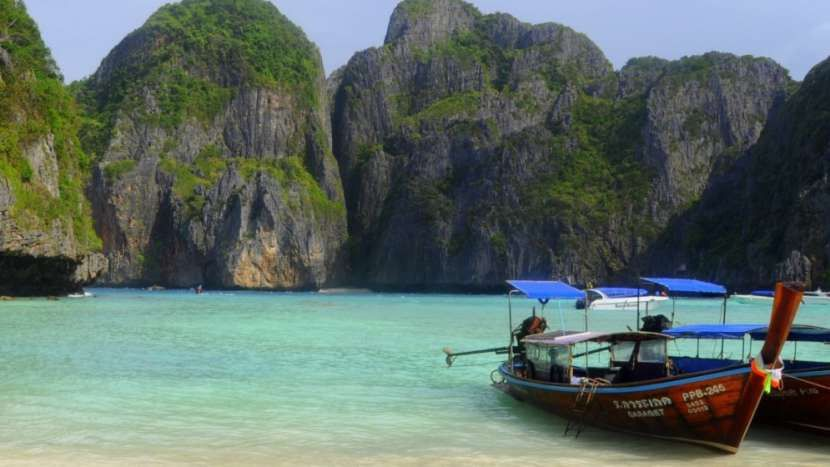
הטיול שלנו לתאילנד- אוקטובר 2016- חלק א'
לקח לנו הרבה זמן כדי להחליט לנסוע לתאילנד (אנחנו בערך הישראלים האחרונים שעוד לא היו שם), אבל בסוף זה קרה, עם הצהרה של בעלי אי שם בחודש מאי 2016 ש"נמאס לו מטיולים בסגנון "מסע כומתה" שאני נוהגת לעשות ושהוא רוצה קצת בטן גב בתאילנד". תאילנד? האם זה אותו הבחור שסירב בתוקף לנסוע לתאילנד לירח דבש? מה עקץ אותו? טוב, החלטתי לא להתווכח ולנצל את ההצהרה לקנייה זריזה של כרטיסים והצבה של עובדות בשטח.
בסקר שוק זריז מצאתי כרטיסים בעלות של 750$ דרך מוסקבה עם חברת איירופלוט לתקופת החגים- 28.9-23.10 (עם עצירה של 3 ימים במוסקבה לביקור משפחה), זהו יש כרטיסים ואנחנו נוסעים לתאילנד!
משיטוט בבלוגים ואתר למטייל החלטנו לעשות את המסלול הקלאסי שרוב המטיילים בפעם הראשונה עושים: צפון, איים ובנגקוק לקינוח. את טיסות הפנים הזמנתי זמן רב מראש, דרך החברה bangkok airways (בעלות של 1400 ש"ח לזוג עבור 3 טיסות פנים: בנגקוק צי'אנג מאי, צ'יאנג מאי פוקט וקרבי בנגקוק).
אני לא אפתח פה את הדיון הישן על להזמין הכל מראש מול להיות ספונטניים, במיוחד כשאנחנו נוסעים בתקופת המונסונים, לכל צד יש את היתרונות והחסרונות שלו, זה תלוי יותר באופי שלכם. לנו היה יותר נוח להזמין הכל מראש כולל מלונות דרך בוקינג (הלכנו על מלונות ברמה טובה) ובדיעבד לא הצטערנו. מבחינת מזג האוויר תפס אותנו המונסון רק במקום אחד- קאו לק, בשאר האזורים היה טפטוף מדי פעם וזהו.
לגבי המסלול והתכנון, התחלנו בצפון- ציאנג מאי (5 ימים) זה די הרבה לעיר אבל רצינו טיול רגוע ולא לדקור נקודות (כמו שאני עושה בדרך כלל), אז טיילנו בעיר בנחת, עשינו טיולי יום לדוי אינתנון וכן אומגות. משם המשכנו לאיים בצד המערבי (ויתרתי לחלוטין על הצד המזרחי- קו סמוי וקופנגן, כי כל מעבר כזה שורף חצי יום וחבל היה לנו לבזבז אותו כדי לראות עוד איים שדי דומים לאיים האחרים) לקו לאק, קו פיפי, ריילי ואו נאנג ומשם טסנו חזרה לבנגקוק לעוד 3 ימים. סה"כ היינו בתאילנד 3 שבועות מלאים.
לפני שאתאר את הטיל שלנו השורה התחתונה היא שתאילנד היא יעד נחמד מאוד אבל לא היה לנו שום אפקט WOW כמו ששומעים מהרבה אנשים שחוזרים משם. המחירים כבר לא כאלה זולים (פירוט מחירים בטיפ), הנופים יפים אבל די דומים (האיים מאוד דומים אחד לשני), לגבי קניות אז הדברים הזולים הם די זבל (תמצאו ב-ebay יותר יפים ויותר זולים) וכמו שמישהו כתב פעם "תאילנד היא copy -paste של עצמה". מצד שני המלונות מפנקים ובמחירים שפויים (לא כמו שהיה פעם אבל עדיין זול), חופים יפים ומים צלולים, אוכל טעים- המון שייקים ופירות טרופיים בגרושים, ותרבות אחרת (מקדשים פשוט מדהימים).
התאילנדים עצמם נחמדים אבל יכולים להיות "קרציות" לא קטנות, במיוחד לקראת סוף הטיול כש-5 תאילנדים מנסים לדחוף לך מאסג' בפעם האלף, או מופע או חליפה שתקנה. גם כל תופעת המיקוח לא נעימה כלל- אין לנו בעיה לשלם סכום סביר, אבל כשאומרים לך מחיר פי 200 מהמחיר האמיתי (הם פשוט רושמים מחיר אחר באותיות עבור המקומיים) ומתייחסים אליך כמו ארנק מהלך (דוגמא לכך תמצאו במחיר כרטיסים בפארקים ושמורות טבע בהן אזרח ישלם 20 בהט ותייר 200) זה די מעצבן (לא העלות אלא עצם ההבדל הבוטה במחירים).
ואחרי ההקדמה הארוכה נתחיל בטיול :
29.9.16 יום 1- טיסת השיכורים:
אחרי 12 שעות קונקשן במוסקבה (שהעברנו בכיף עם המשפחה של בעלי) עלינו על טיסת לילה לבנגקוק (חברת איירופלוט). המטוסים חדישים ומפנקים, הצוות אדיב ו90% מהטיסה היו דוברי עברית. רק עם המזל שלנו התיישבו לפנינו זוג בשנות ה-50 (לא ישראלים) מתודלקים היטב, אנחנו אמנם דוברי רוסית אבל את הקללות שהם הוציאו אחד כלפי השני לא שמעתי מעולם! ממש בית ספר לעגה הרוסית... לאחר מספר שעות של צעקות ושיטוטים וריח נוראי של אלכוהול מצמד ה"מתודלקים", צוות המטוס ניסה לטפל בבעיה, לאחר שגם הם נשלחו לאלפי עזאזלים הם לא נשארו פריירים ואיימו על הזוג ה"חביב" בהעברתו למשטרה עם הנחיתה. איימו וקיימו! הזוג המלכותי שלפנינו ירד מהמטוס באזיקים ונסע אחר כבוד מלווה במשטרת תאילנד. ואנחנו אחרי 9 שעות טיסה וחוסר שעות שינה מהלילה הקודם (טיסה למוסקבה) ירדנו תשושים והלכנו לברר איך לוקחים את הקונקשן לצ'יאנג מאי.
שדה התעופה בבנגקוק הוא ענק אך מסודר להפליא. מיד עם היציאה מהמטוס יש שילוט לדלפקי הטרנספר. אם הזמנתם טיסה ב-co sharing (למשל חברת תאי עושה זאת עם טיסות לצי'אנג מאי מישראל) כלומר המזוודות ישלחו כבר ליעד הסופי. לנו לא היה שירות כזה ולכן במקום ללכת ישר בקומה 4 ולעבור לטרנספר, היינו צריכים לאסוף את הכבודה, לעבור ביקורת דרכונים ולעשות צ'ק אין לטיסה הבאה מקומה 2 (לא כזה סיפור, גם בדרך אפשר לעבור להחליף כסף ולקנות כרטיס סים מקומי).
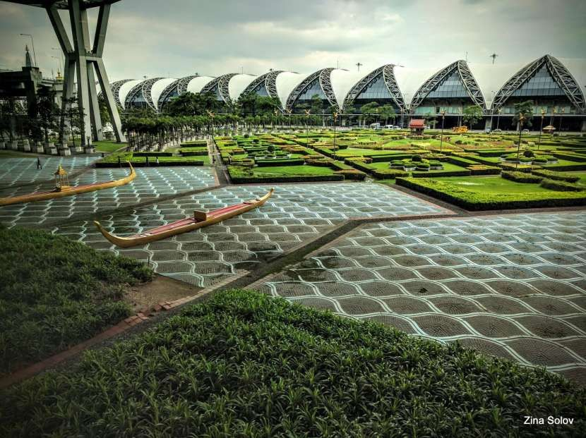
לחברת bangkok airways יש טרקלין נוסעים בכל שדה תעופה, עם קפה, תה ,שתייה קלה, נשנושים ו-WIFI. אנחנו כבר בקושי עמדנו על הרגליים מרוב עייפות, אז השעה וחצי שהתאפצנו בטרקלין עזרה לנו מאוד. הטיסה לצי'אנג מאי אורכת שעה, נוחתים בשדה קטן, ממש ליד קבלת הכבודה יש דוכן של taxi meter- שירות מוניות, נרשמים שם, מקבלים פתק והולכים לרחבת המוניות בחוץ שם כבר מונית תיקח אתכם ליעד במחיר שכתוב על הפתקית.
המלון שלנו, שהזמנתי דרך בוקינג-the 99 gallery hotel נמצא בעיר העתיקה ממש צמוד למקדש המפורסם wat phra sing, המונית עלתה 150 בהט. הגענו למלון (4 כוכבים, בפועל יותר כמו 3, אבל בגלל שלא תכננו להתפנק בעיר אלא יותר מלון לישון, הוא התאים לנו) ומיד אחרי מקלחת צללנו לשינה עמוקה.
התעוררנו בשש בערב רעבים והחלטנו לתור מעט את העיר. הלכנו לכיוון שוק הלילה המפורסם (חצי שעה הליכה מהמלון, והתרשמנו מדברים מעניינים בדרך), לא רחוק מהמלון מצאנו את המסעדה האהובה עלינו בצי'אנג מאי ה-hot chili, שנמצאת במתחם מסעדות קטן (כשהולכים ממקדש הפרה סינג לכיוון החומה-יציאה מהעיר העתיקה). המסעדה מצוינת! אווירה נעימה, אוכל תאילנדי טעים מאוד ומחירים זולים! שם גם התאהבנו בסלט הפאפאיה (החריף בטירוף) ובקינוח המעולה של מנגו ואורז דביק. הכתובת- Thonon Rachadamnoen Alley, Amphoe Mueang Chiang Mai, Chang Wat Chiang Mai 50200, Thailand.
ככה נראת המסעדה מבחוץ:
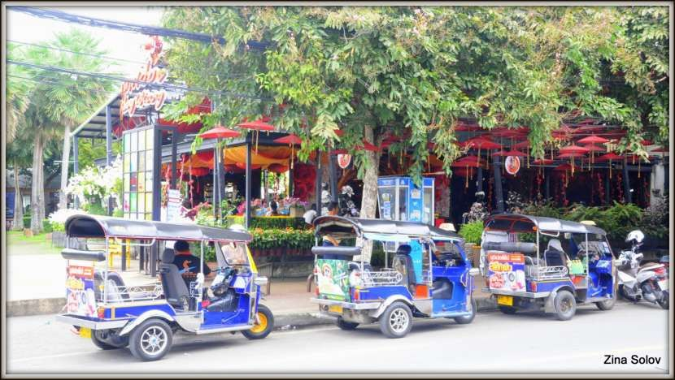
מנגו וסטיקי רייס:
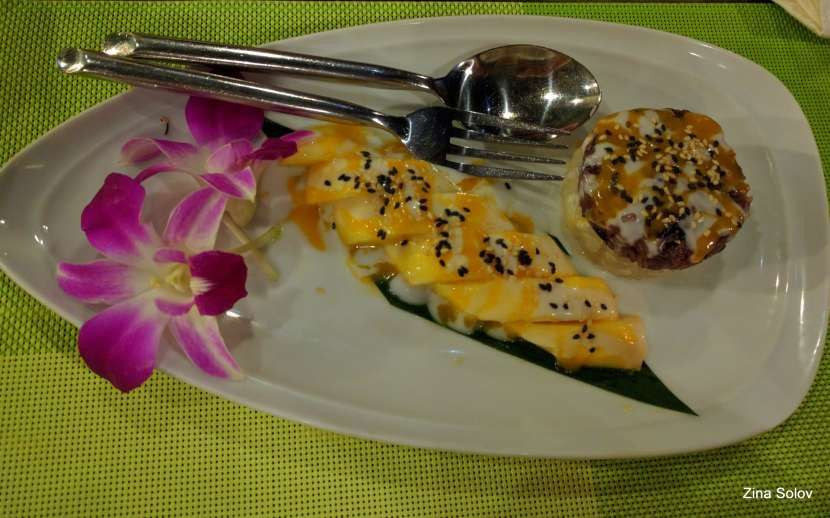
אחרי שסעדנו המשכנו לשוק הלילה. השוק מלא דוכנים שמוכרים "זבל" החל מבגדים, צעיפים ומיני פיצ'פקס. על המחיר יש להתמקח (אתם עוד תלמדו את האומנות במהלך שהותכם), המשכנו לסניף של המרכז למטייל תאילנד (רשת ישראלית שמוכרת טיולים במחירים זולים יותר מרשתות אחרות) שנמצאת ממש ליד שוק הלילה וקנינו טיול לדוי אינתנון, סדנת בישול וכרטיסים למוזיאון התלת מימד. את האומגות (flight of the Gibbon) הזמנתי עוד מהארץ.
משם המשכנו חזרה למלון כשפתאום שמענו מוזיקה, וממש ליד שוק הלילה יש מתחם מסעדות ודוכנים עם הופעה חיה של להקה באווירה ממש נעימה. מיד קנינו לעצמנו שייק פירות (מנגו ופסיפלורה)- הכי טעים ששתינו בתאילנד היה במתחם הזה! ומשם עייפים אך ספוגי אווירה תאילנדית הלכנו להשלים שעות שינה.
30.9.16 יום 2- מתחילים להכיר את צ'יאנג מאי:
אחרי שהשלמנו שעות שינה, קמנו רעננים ומוכנים "לקרוע" את העיר. אחרי ארוחת בוקר, תפסנו מונית אדומה ליד המלון שתיקח אותנו למקדש דוי סוטפ (המקדש המפורסם בצ'יאנג מאי) שנמצא במרחק חצי שעה נסיעה מחוץ לעיר. המונית האדומה זה בעצם טנדר סגור שהוסב למונית, לא ממליצה לנסוע בכזה במיוחד בעיר (אתם פשוט נושמים פיח)- עדיף כבר לקחת מונית סגורה (גם אם יקרה יותר). כאן עשינו טעות של צעירים ולא התמקחנו על המחיר, אמרנו לנו 700 בהט הלוך וחזור שנראה לנו כמחיר סביר (במונחים ישראלים כמובן) רק בדיעבד הבנו שגזרו עלינו קופון ושמונית הלוך חזור צריכה לעלות לא יותר מ-500 בהט.
אז אחרי נסיעה של חצי שעה בערפיח ללא יכולת לנשום חמצן נקי, התחלנו לעלות בהר לכיוון המקדש. דוי סוטפ הוא מקדש הניצב במעלה ההר (1675 מטר) ומשקיף על העיר. האגדה מספרת כי המלך קיבל עצם של בודהה, העמיס אותה על פיל והחל לצעוד איתו במעלה ההר. לפני הפסגה, הפיל הסתובב שלושה סיבובים ולפתע צנח ומת. במקום מותו הוקם המקדש.
הנוף מההר:
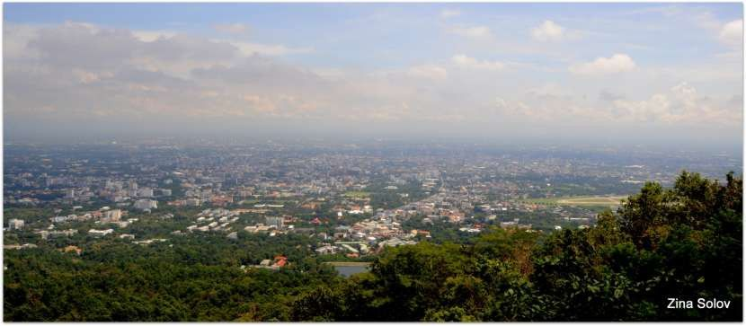
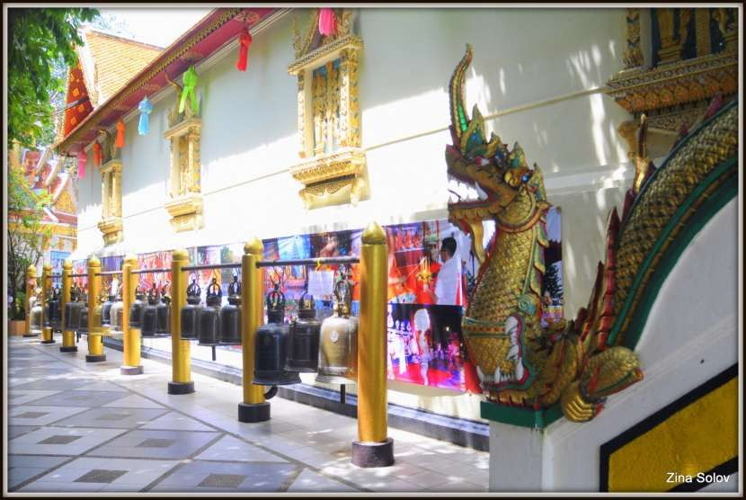
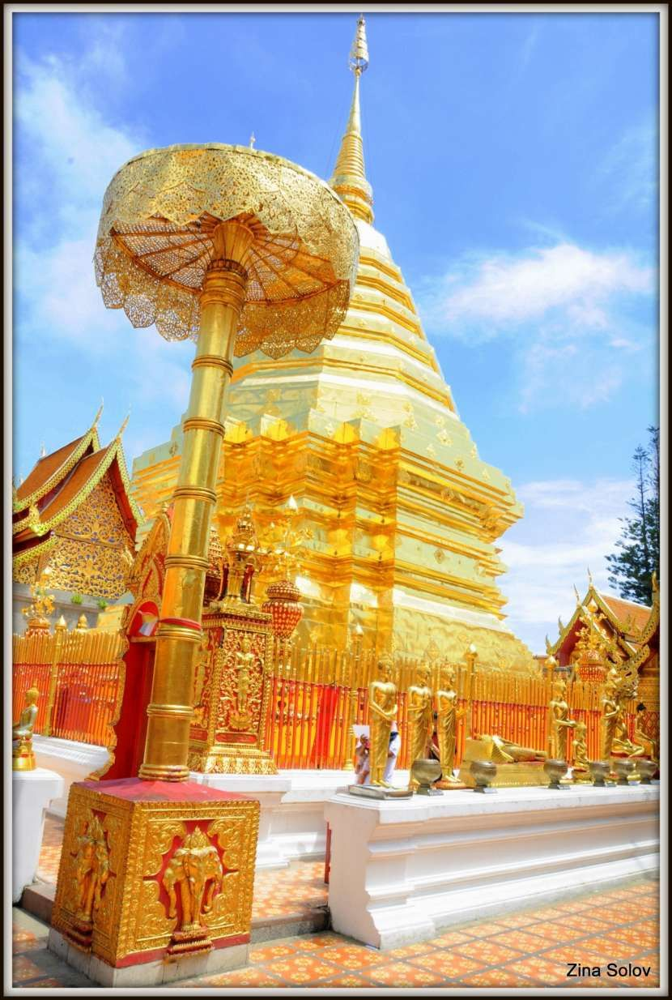
ברחבת הכניסה יש לכם 2 אפשרויות לעלות למקדש: או ברכבל (50 בהט) או במדרגות (306 מדרגות). אנחנו עלינו ברכבל וירדנו במדרגות (עדיין שילמנו 50 בהט כי אין כרטיס לכיוון אחד). כשנכנסים לרחבת המקדש השקט מקדם את פניכם, שוטטנו קצת מסביב ואז נכנסנו פנימה לאיזור הקדוש שכניסה לשם מחייבת לבוש צנוע וללא נעליים (אל דאגה ניתן לקחת חצאית בחינם), גברים שימו לב לא גופייה ולא מכנס מעל הברך. אל תוותרו על הכניסה לבפנים זה ליבו של המקדש והוא פשוט מדהים! כל המבנים מצופים זהב ובמקום אווירה של שקט ושלווה. משם ירדנו במדרגות שהמעקות עשויים כדרקונים מדהימים (בדיעבד כדאי גם לעלות במדרגות כי זוכים לנוף משגע של המקדש שנגלה עם כל עלייה). כשיורדים מגיעים למתחם שוק עם מלאי שטויות אוכל ושתייה. למי שרוצה משם יכול להמשיך לכפרי האומנים (לא עשינו) אנחנו התקשרנו לנהג שיבוא לקחת אותנו למלון. מספיקה שהייה של שעתיים במקום.
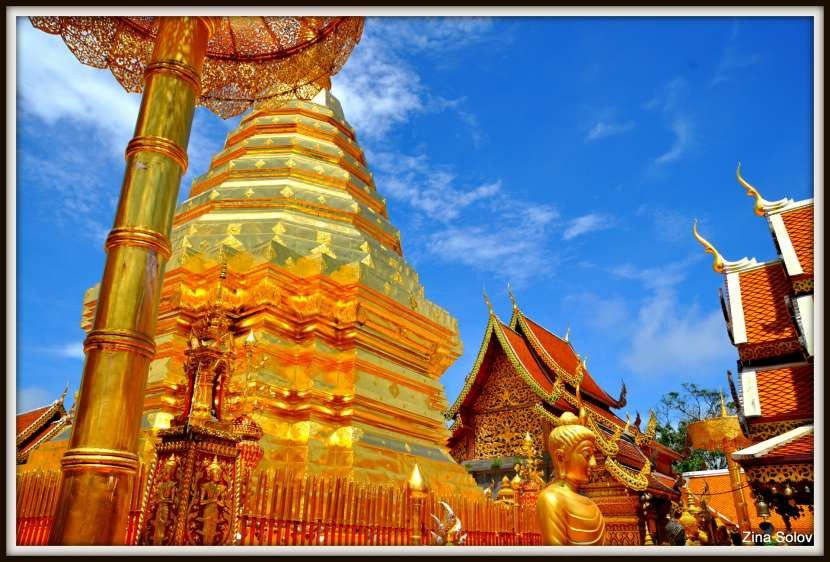
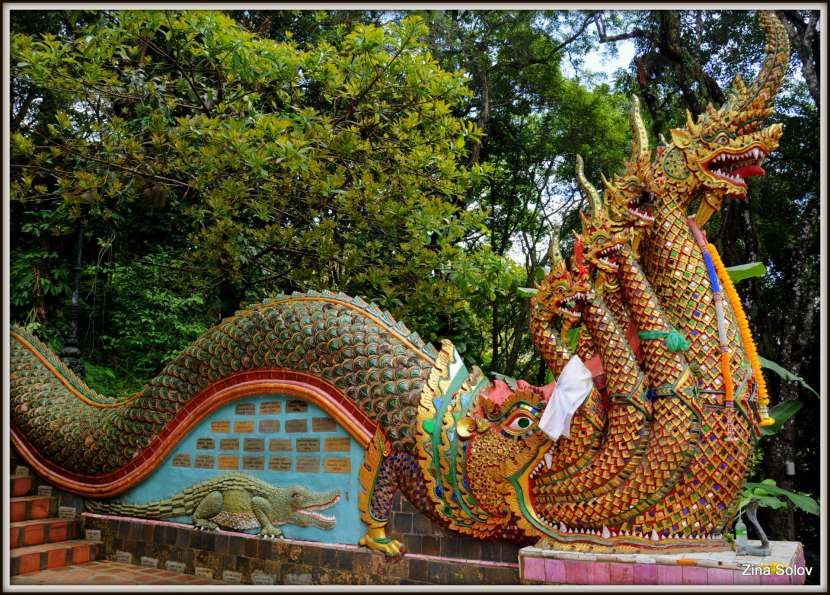
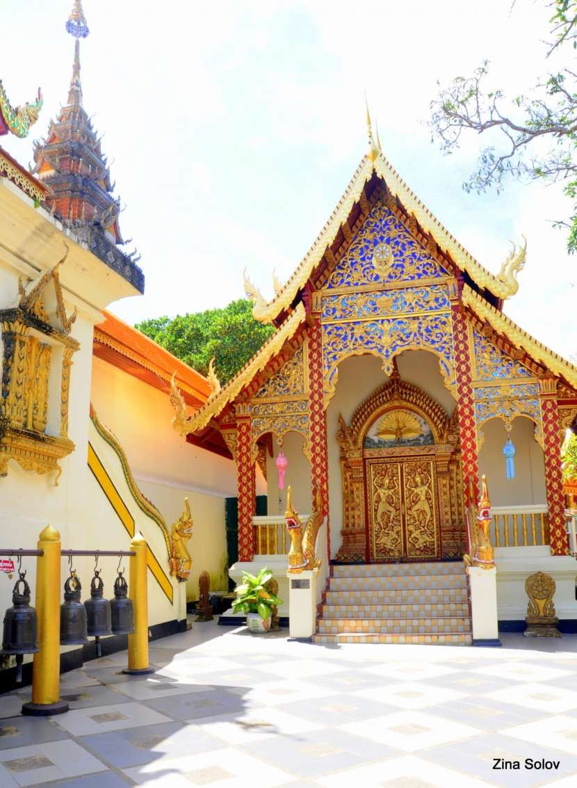
חזרנו לעיר ואחרי ארוחת צהריים במסעדה אחרת (לא טעימה כמו ההוט צ'ילי) לקחנו טוקטוק (כי היה חם מידי ללכת ברגל) לשיט על נהר הפינג (יוצא ממלון מאחורי שוק הלילה). השייט יוצא כל שעה ונמשך שעתיים, עלות 550 בהט לאדם (אתר- www.maepingrivercruise.com) שטים עד לחווה אורגנית שם שותים מיצים ופירות ושטים חזרה.
בדרך מתרשמים מהאחוזות של עשירי תאילנד. אנחנו היינו עם עוד זוג הודים-בריטים וכמובן עם המזל שלנו הסירה נתקעה באמצע הנהר, עד שחיכינו לחילוץ, מפעיל הסירה סיפר לנו (באנגלית עילגת) על החיים בתאילנד (למדנו ממנו יותר מאשר מכל המדריכים של הטיולים המאורגנים שלקחנו בהמשך). השייט עצמו חביב אך ממש אינו בגדר חובה (רק אם בא לכם אתנחתא נחמדה על הנהר וליהנות מתצפית על הוילות של עשירי תאילנד).
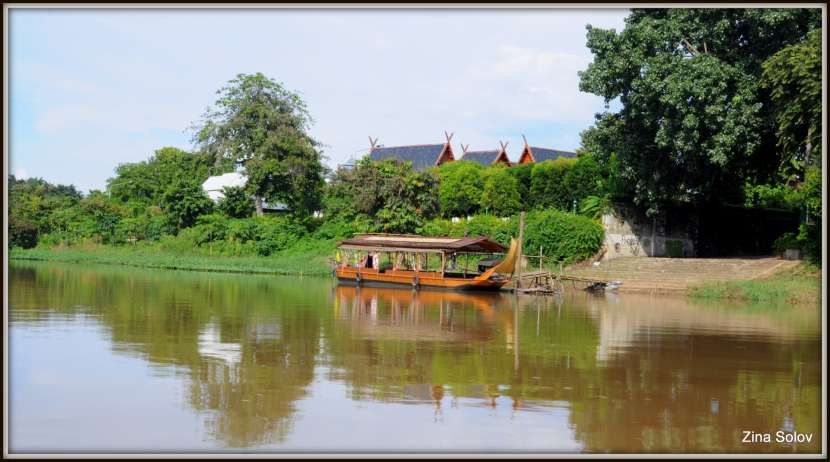
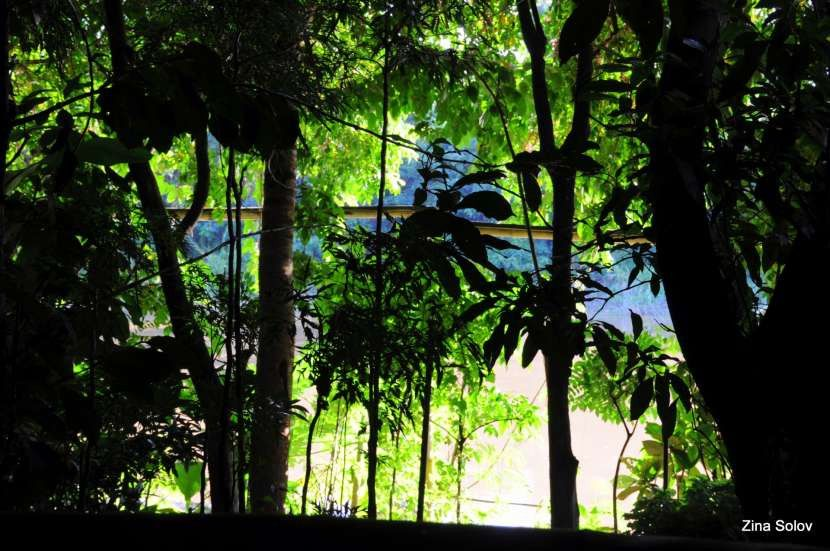
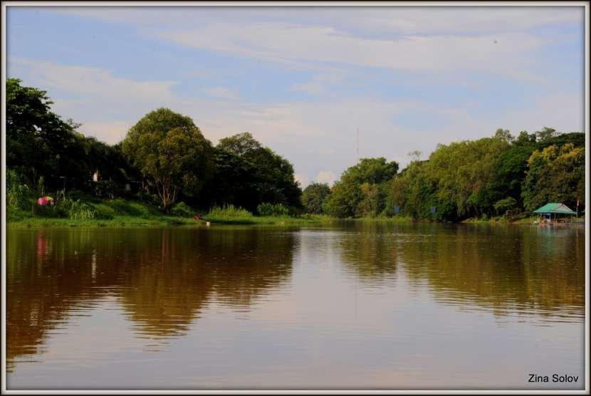
אחרי השייט קפצנו למסעדת דגים שמפעיל הסירה המליץ (לא זוכרת את שמה אבל נמצאת ממש ליד הרציף של השייט וליד הגשר שחוצה את הנהר). שם החלטתי לנסות סלמון בתוך קוקוס, נשמע אקזוטי אבל השילוב לא כזה מוצלח בעיני (בטוחה שרבים יחלקו עלי).
המנות במסעדה:
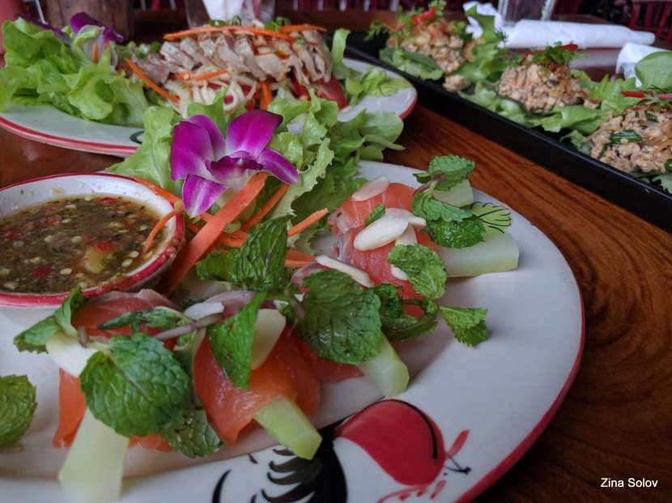
אחרי ארוחה טעימה המשכנו ברגל לכיוון שוק הלילה, קנינו קצת סמרטוטים, שתינו שייקים במקום ששתינו אתמול והחלטנו להתפנק ולתפוס טוק טוק למלון (גם על טוק טוק צריך להתמקח הם מבקשים 100 בהט אבל המחיר הוא כ-80. אם אתם רוצים להתמקח על 2 ש"ח בבקשה... אנחנו לא טרחנו).
1.10.16 יום 3- עפים כמו קופים:
היום אנחנו עושים את האטרקציה שחיכיתי הרבה זמן לעשות (ועלתה לי באיומי גירושים מצידי אם בעלי לא ישתף פעולה). הזמנתי את הפעילות עוד מהארץ דרך המרכז למטייל תאילנד (שבאמת נותנים את המחיר הכי זול) בעלות של 1800 בהט לאדם. בשעה 11 אספו אותנו מהמלון ונסענו לאתר (Flight of the Gibbon). היינו קבוצה של 9 ישראלים (כמה לא מפתיע)- אנחנו ועוד זוג צעיר ומשפחה עם ילדים (אנשים מאוד נעימים כולם). הפעילות פשוט כיפית! כלכך הרבה אדרנלין! חוויה שאסור לפספס, אפילו בעלי (הפוחד מגבהים והסובל מסקפטיות יתר) נהנה מאוד. אחרי הדרכה קצרה מתלבשים ונוסעים למסלול, 2 האומגות הראשונות הם קלילות כדי להיכנס לעניינים, אתם קשורים בחבל אחד לשני ולעץ ככה שאין באמת חשש שתיפלו. אז אחרי שקולטים את העניין, מגיעים לאומגות הרציניות יותר- 800 מ' אורך, פשוט אדיר! אתם חווים את כל סוגי האומגות- מהירות, ארוכות, זוגיות, סופרמן, השתלשלות מטה וכו'- תביאו מצלמת go pro יוצאים סרטונים משגעים!
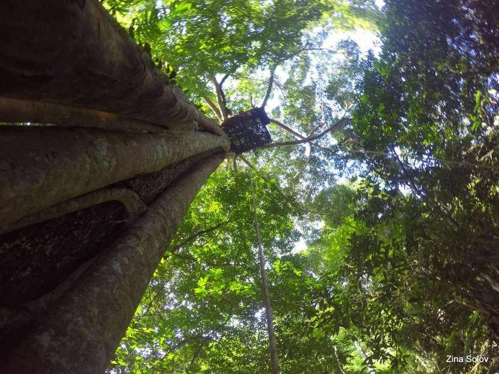
אחרי האומגות חוזרים למתחם ואוכלים ארוחת צהריים קלה ומשם יש טיול למפל נחמד (אחרי איסלנד ונורבגיה קשה להרשים אותנו במפלים...) ומשם חזרה למלון לקראת חמש בערב.
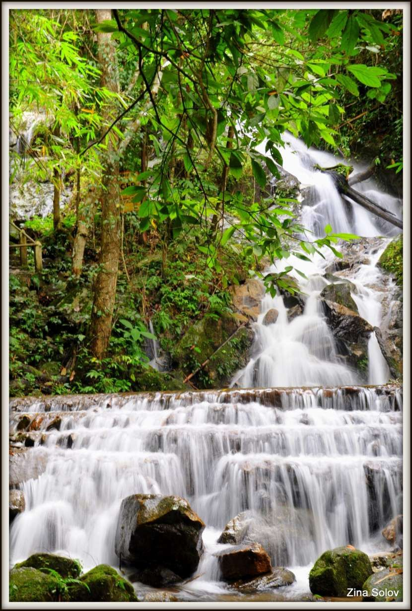
ניצלנו את הזמן למקלחת ומנוחה, וכשהיינו רעבים הלכנו לארוחת ערב במסעדה האהובה עלינו (hot chili). בדרך חזרה למלון אנחנו הולכים ברחובות החשוכים יחסית ופתאום מצד הכביש מתוך שקית זבל קופצות עלינו 4 חולדות!!! אזהרה- בערים בתאילנד מקובל להניח את שקיות האשפה בלילה לצידי הכביש, האקלים הלח והחם והמזון הרב מייצר גן עדן למכרסמים הלא כלכך חמודים האלה, כך שכשאתם הולכים ברחובות בנגקוק או ציאנג מאי (לא במקומות הומי אדם כמובן) שימו לב לשקיות האשפה כי אם משהו יקפוץ משם שלא תקבלו התקף לב... איזה מזל שאני לא פוחדת מעכברים...
אז אחרי יום עמוס פעילות וטראומת חולדות החלטנו לפני השינה להתפנק במסאג'. לא חסר איפה לקבל מסטאג' בציאנג מאי או בתאילנד בכלל, מול המלון שלנו היה מכון מסאג' ככה שהפכנו ללקוחות קבועים בימים שהיינו שם. מסאג' רגליים עולה 250 בהט לאדם לשעה (שימו לב שאחרי שמונה בערב מקומות רבים מבקשים תוספת של 50 בהט), יש כמובן סוגי מסאג' רבים ומגוונים והעליות בהתאם. אז אחרי מסאג' מפנק ישנו כמו תינוקות.
2.10.16 יום 4- הטיול המאורגן הראשון שלנו:
קמנו מוקדם (שבע בבוקר) כי בשמונה כבר אוספים אותנו לטיול המאורגן הראשון שלנו לדוי אינתנון. בשמונה וחצי הגיע המיניבוס ויצאנו לדרך.
דוי אינתנון הוא בעצם שמורת טבע המכונה גם "הגג של תאילנד", בשל העובדה שבשטחו נמצא ההר הגבוה ביותר בתאילנד שמתנשא לגובה של 2,565 מטר מעל פני הים.
העצירה הראשונה שלנו בטיול היא המפל היפיפה ווציראטאן (wachirathan), שם ניתן לנו חצי שעה לחוות את המקום.
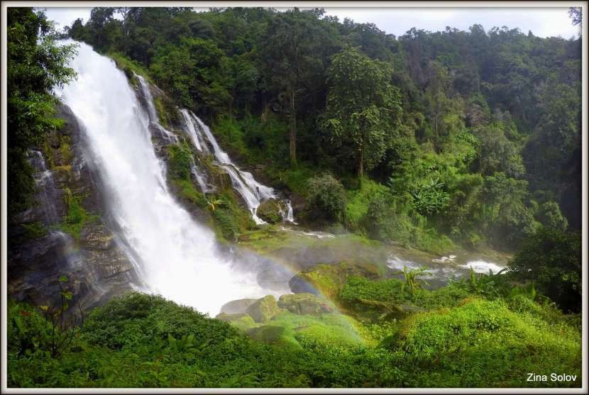
טיילנו קצת לאורך המפל, נרטבנו מהרסס והמשכנו לעצירה הבאה שהיא הפסגה. לצערנו התחיל לרדת גשם ככה שלא כלכך ראינו נוף בגלל הערפל. על הפסגה עשינו סיבוב בתוך היער וראינו את המקדש ומשם נסענו לפגודות המלך והמלכה.
הפסגה:
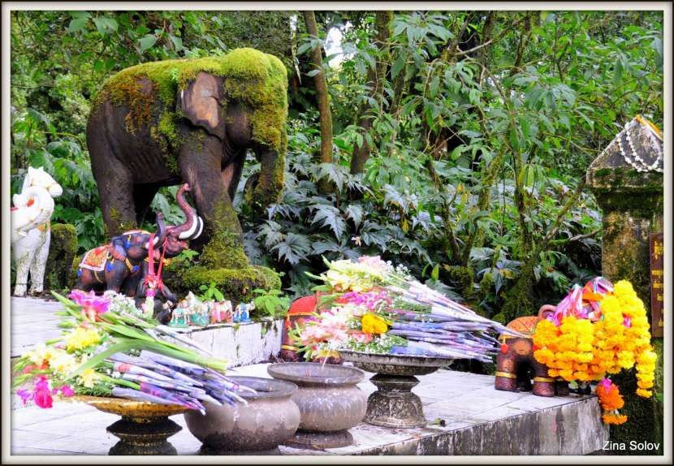
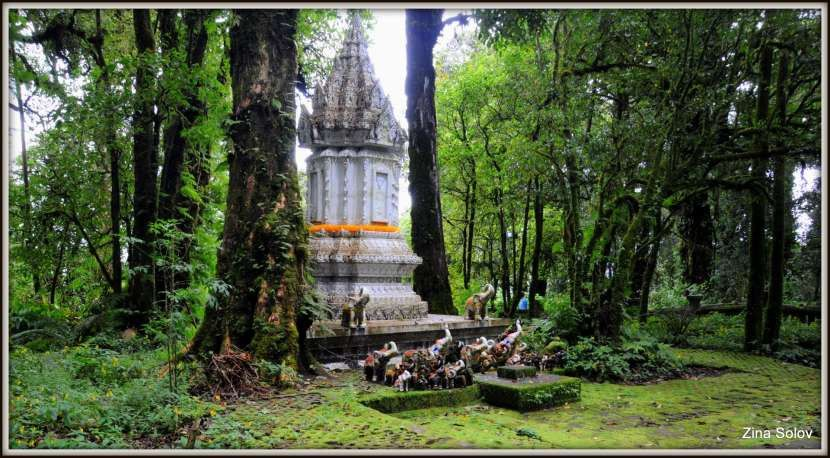
הפגודות:
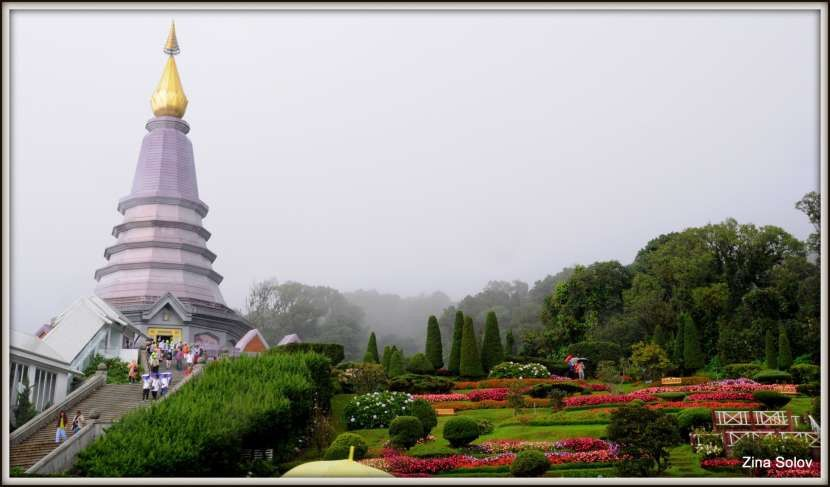
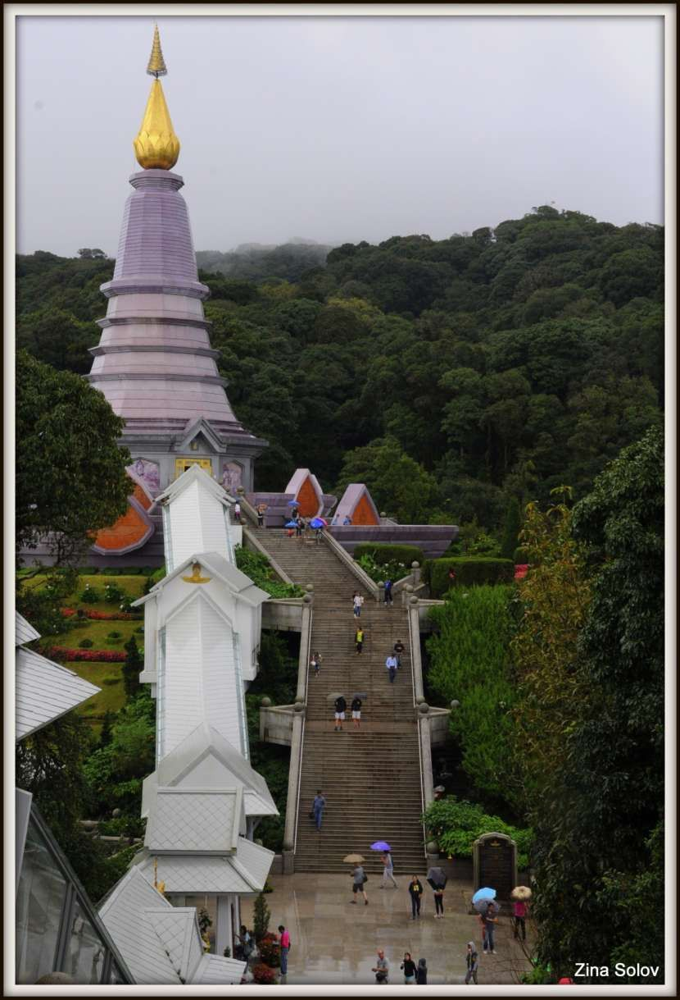
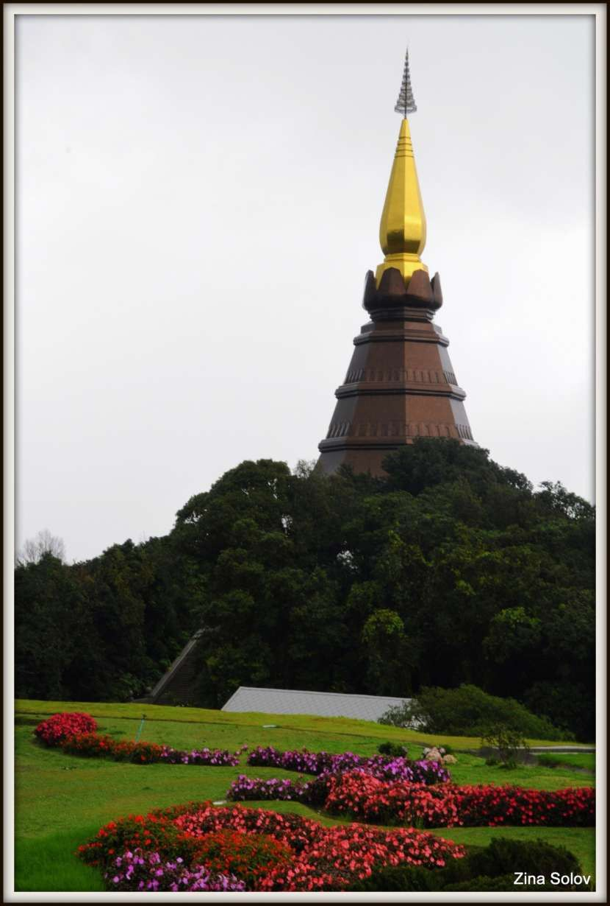
מדובר במבנים מרשימים המוקפים בגנים מטופחים. המבנים נבנו לימי ההולדת -60 של המלך והמלכה, טיילנו במקום בגשם זלעפות (שנגמר מהר מאוד) אולם לצערנו לא ראינו נוף בגלל הערפל.
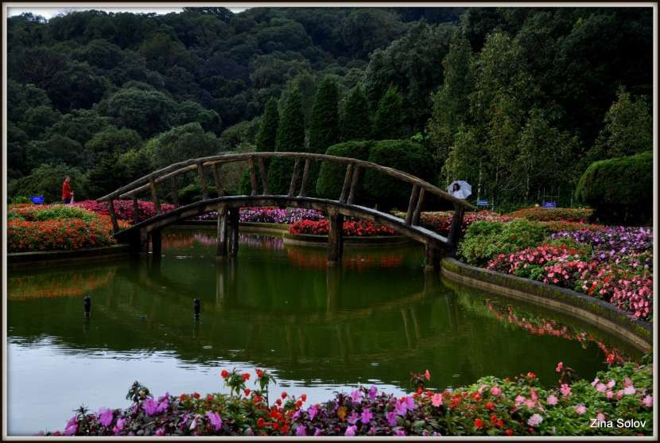
הגיע הזמן להפסקת צהריים ואחרי שעצרנו בשוק מקומי קטנטן ומלא כל טוב, עצרנו לאכול- האוכל די בסיסי, אורז, עוף ופירות... משם המשכנו למפל השני והאחרון להיום והוא- sirithan, לצערנו הגשם התחדש ככה שלא זכינו לחוות את המפל הזה שנראה מרשים אבל אפרורי.
השוק והשביל למפל:
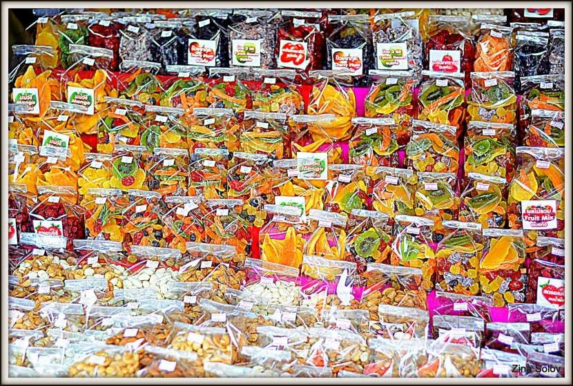
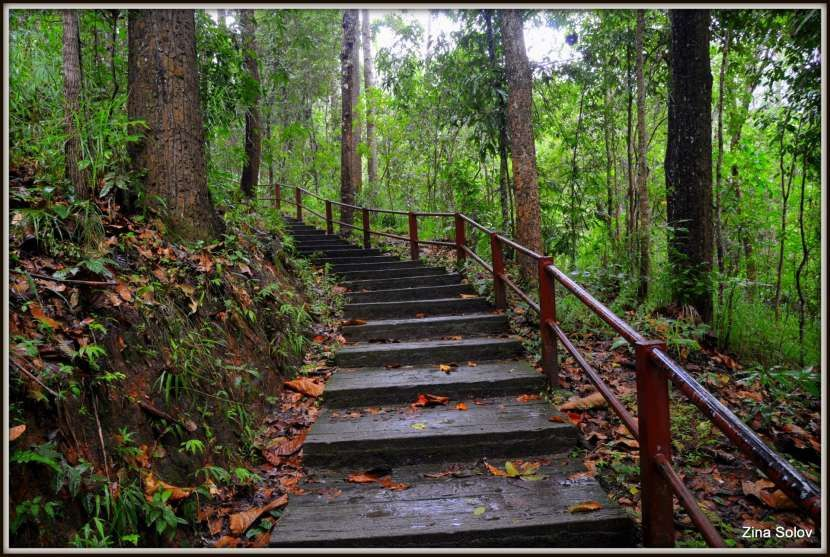
העצירה האחרונה היא שבט קארן- יותר נראה כמו ניסיון לסחוט שנקנה מהם צעיפים (שעולים פי שניים יותר זול בשוק הלילה), אין מה לעשות בכפר, אולי למעט לראות שדה אורז…
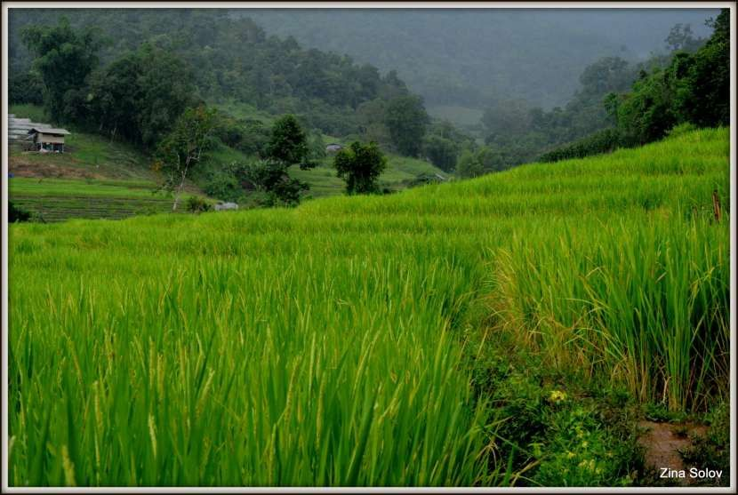
לסיכום הטיול, בסך הכל הטיול די נחמד אם כי ממוסחר (כמו כל הטיולים בתאילנד- שגילינו בהמשך). המדריך לא באמת סיפק מידע או תובנות על המקום או על ההיסטוריה (למדנו יותר ממשיט הסירה בשייט בצ'יאנג מאי) אבל בגדול ניתן להתרשם מהמקום (רק כדי להבין שבפעם הבאה עדיף הגיע לבד).
חזרנו למלון בשעה חמש וחצי, ואחרי מנוחה קצרה הרעב הוציא אותנו לשוטטות נוספת וכאן חיכתה לנו הפתעה נעימה! אז ככה, אם אתם נמצאים בעיר ביום ראשון מחכה לכם שוק ע-נ-ק-י להסתובב בו, עד מה ענקי? כל העיר העתיקה הופכת לשוק דוכנים מלא עד אפס מקום. זה הזמן לעשות קניות של מזכרות ופיצ'פקס! וליהנות מאוכל רחוב (אולי גם מקצת סלמונלה על הדרך- על אחריותכם). אז בזבזנו כ-3 שעות על שוטטות ואחרי מסאג' מפנק בתום הסיור לשנו פרשנו לישון עייפים אך מרוצים.
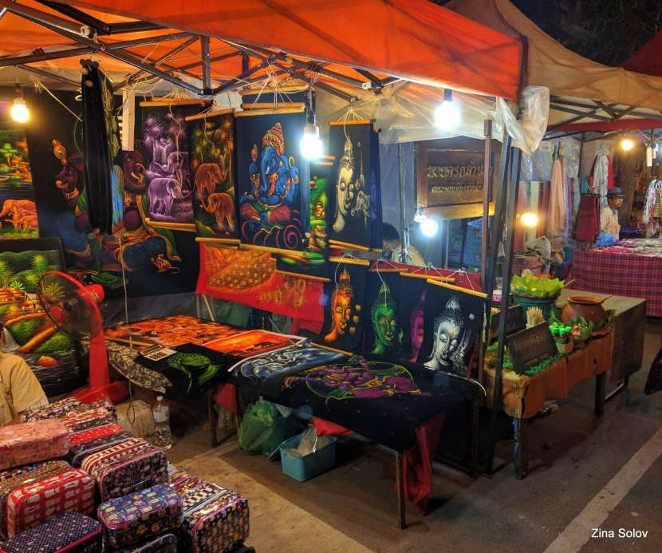
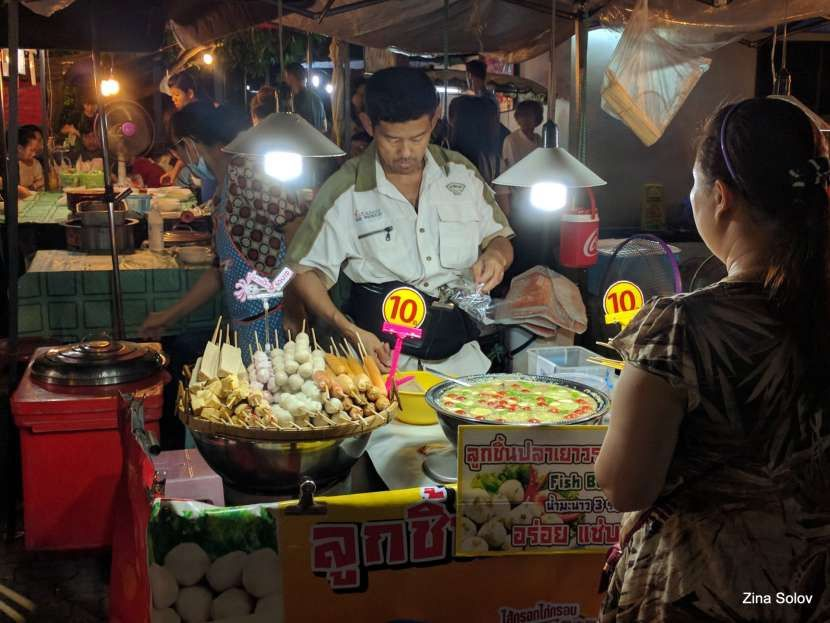
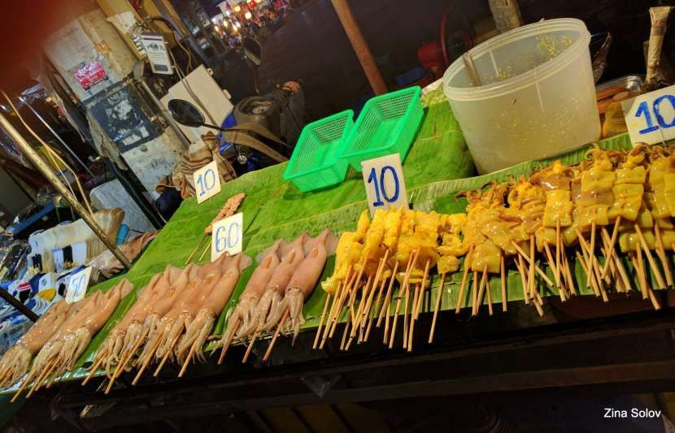
3.10.16 יום 5: עוד יום של שוטטות:
היום אנחנו הולכים למוזיאון התלת מימד ששמעתי עליו המון המלצות. המוזיאון נצא ממש ליד שוק הלילה וסניף למטייל תאילנד. כרטיסים עלו לנו 200 בהט לאדם (דרך מרכז למטייל תאילנד). אנחנו החלטנו ללכת יחסית מוקדם בבוקר מתוך ההנחה (הנכונה) שלא יהיו הרבה אנשים וצדקנו! התייצבנו ב-9 בבוקר והמוזיאון כולו היה לרשותנו. מדובר בחוויה שאסור להחמיץ! מהר מאוד תמצאו את עצמכם מתרוצצים כמו ילדים ועושים פוזה למצלמה ליד כל תמונה. אנחנו בילינו במקום כשעה וחצי (היינו כמעט לבד- רק כשיצאנו המקום התחיל להתמלא).
משם החלטנו לבדוק את המלצת משיט הסירה (מהשייט על הנהר לפני 3 ימים) וללכת לשוק היום של המקומיים. השוק נמצא בין שוק הלילה לכיוון הנהר. בגדול אין כלכך מה לעשות שם... די מזכיר את השוק הבדואי של באר שבע (זיכרונות ילדות) - די מלוכלך והרבה זבל נמכר שם.
אחרי שיטוט והפסקה קצרה לשייק, החלטנו לעשות עוד סיבוב שוטטות בעיר העתיקה ולנשנש משהו על הדרך (לא רצינו לאכול הרבה כי בערב אנחנו הולכים לסדנת בישול). שוטטנו להנאתנו בעיר העתיקה וקצת סביב חומות העיר, חזרנו למלון בסיבות שתיים למנוחה של שעתיים.
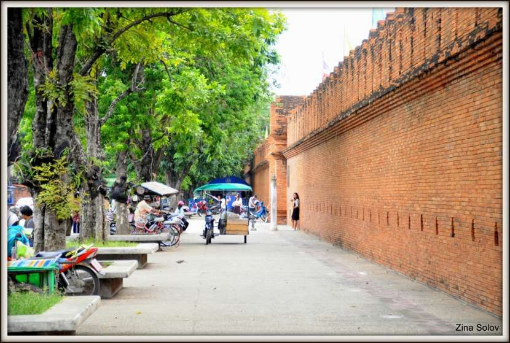
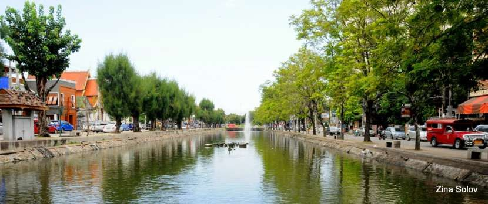
בשעה ארבע בערב אספו אותנו מהמלון לסדנת הבישול של bann tahi (גם אותה הזמנו דרך המרכז למטייל תאילנד). שמענו המון המלצות על סדנת בישול בתאילנד ואולי כגודל הציפיות כך גודל האכזבה.
נכנסנו לטנדר עם עוד זוגות ומיד קיבלנו פתק שנסמן איזה מנות אנחנו רוצים להכין (בלי שבכלל קיבלנו הסבר על איך הולכת להתבצע הסדנה ומי נגד מי...) סימנו משהו על דף ונסענו לשוק מקומי. שם היה ניסיון יפה של מארגני הסדנה להכיר לנו את הרכיבים התאילנדיים אך בהמולה של השוק הסואן והאנגלית הנוראית של המדריכים לא ניתן היה להבין הרבה.
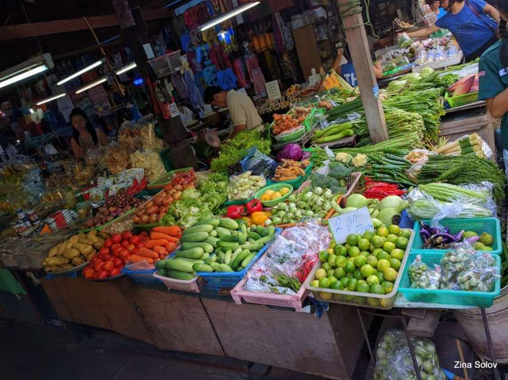
אחרי הסבר מתיש של כחצי שעה ממנו לא הבנו כלום, נסענו לבית הספר עצמו (שנמצא ממש ליד המלון שלנו) חולקנו ל-2 קבוצות ועלינו למעלה, חשבנו שסוף סוף נקבל הסבר על מה קורה, ושוב טעינו, במקום זה נכנסה אחת המדריכות ופיזרה את הקבוצה לפי סוג המאכלים שכל אחד סימן (בחרנו פאד תאי כמנת הפתיחה). שוב לתומי חשבתי שאנחנו הולכים ללמוד להכין פאד תאי מאפס, בפועל קיבלנו כבר את כל המצרכים בכמות הנדרשת, קיבלנו הסבר זריז על סדר הפעולות כמו לחתוך קצת ירקות ולטגן בסדר מסוים וזהו קדימה תבשלו (לא שזה מסובך כשיש לכם כבר הכל חתוך ודי מוכן) כשהמנה מוכנה חוזרים לחדר ואוכלים אותה ואז שוב מתחלקים למנה הבאה וכן הלאה (מרק פירות ים, ועוד איזושהי מנה שאני כבר לא זוכרת), אגב אם אתם עושים את הסדנה של הבוקר אתם מכינים גם קינוח. שנינו יצאנו מאוד מאוכזבים מהסדנה שנראתה כמו פס תעשייה רץ, הרגשנו כמו זוג ידיים רובוטיות שכל מה שעשינו היה לחתוך קצת ולטגן קצת ולאכול הרבה! אני חשבתי ,לתומי, שכל אחד יכין מרכיב כלשהו של מטבח תאילנדי ובסוף אוכלים ארוחה מגוונת ממה שכולם הכינו... אבל כמו שאמרתי, אולי ציפינו ליותר מידי בהתחשב בביקורות המהללות שקראנו. לפחות יצאנו שבעים ולא שרפתי שום דבר :). כמובן שאחרי מאמץ כזה צריך מסאג'... וככה נגמר לו היום.
4.10.16 יום 6: ביי ביי צ'יאנג מאי, אנחנו טסים דרומה.
קמנו ליום מעונן וגשום מעט, אבל חם- ככה זה באקלים הטרופי. הטיסה שלנו רק ב-14:00 ככה שיש לנו את כל הבוקר להשלים שוטטות בעיר. אחרי שאכלנו וארזנו את המזוודות, יצאנו לטייל במקדש wat phra sing שנמצא ממש ליד המלון שלנו. מדובר במקדש מרשים ואחד החשובים בעיר. מבחוץ הוא לא כזה מרשים אולם ברגע שנכנסים פנימה ומטיילים בין הגנים אתם נחשפים למבנים מדהימים מצופים כולם זהב עם פסלוני פילים מזהב גם כן.
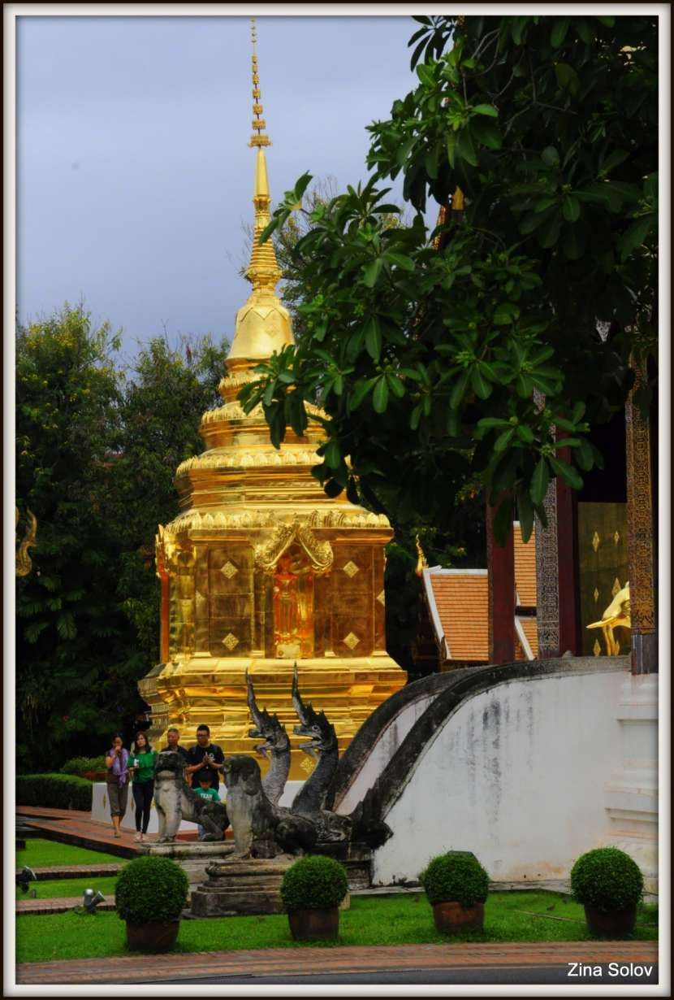
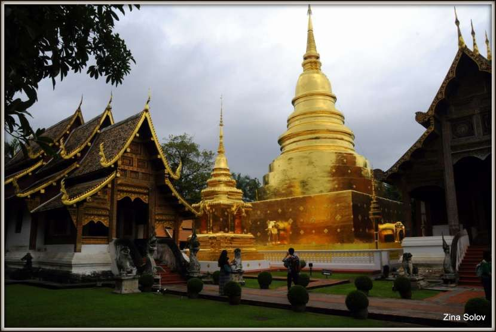
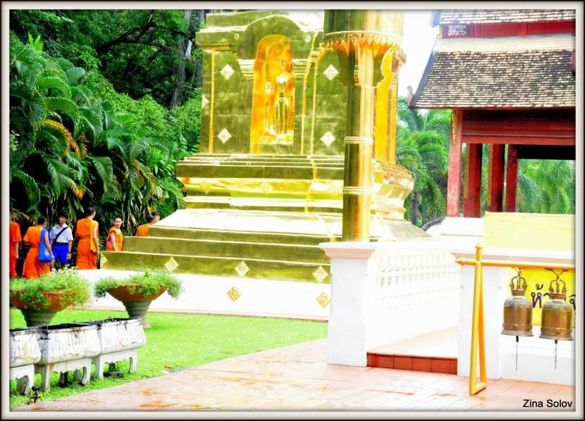
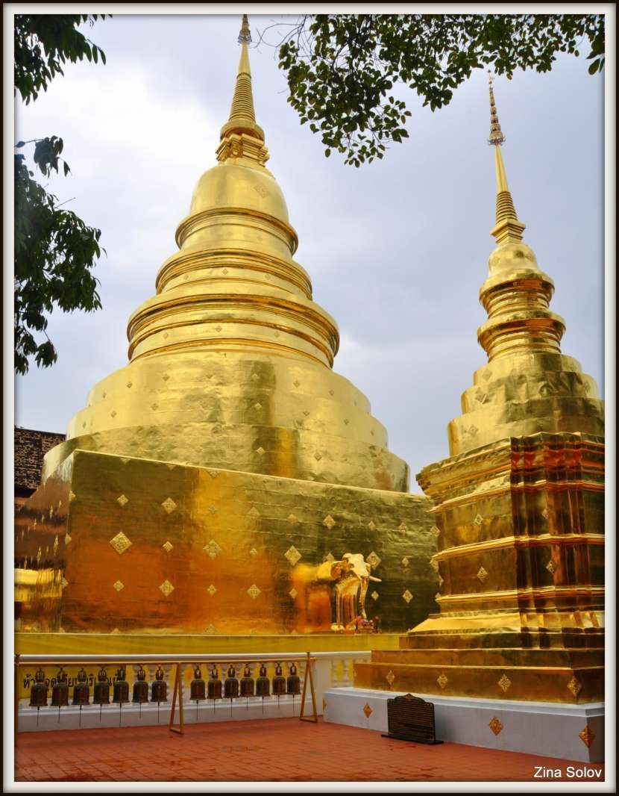
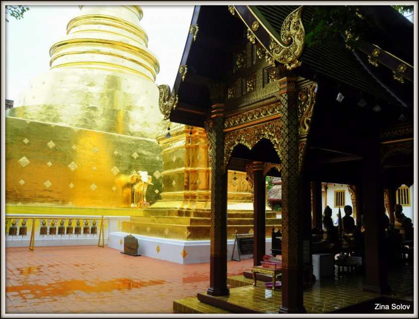
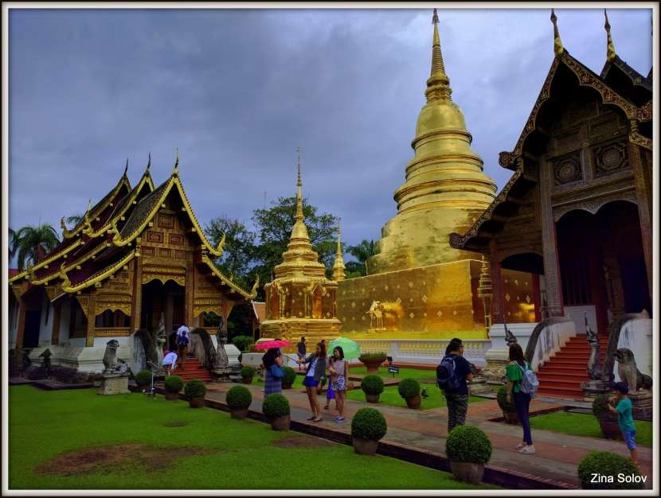
אחרי שייק פירות נוסף חזרנו למלון והזמנו מונית לשדה התעופה. טיסה ישירה מצ'יאנג מאי לפוקט יש רק ב-14:00 ככה שזה די תקוע באמצע היום, לכן הייתי ממליצה להשאיר את השוטטות בעיר ליום זה.
לקח לנו 15 דקות להגיע לשדה, מיד מסרנו את התיקים, ותהינו מה נעשה בשעה וחצי שיש עד הטיסה. אז ככה, בגלל שזה טיסות פנים ניתן להגיע לשדה עד חצי שעה לפני מועד ההמראה, אנחנו לקחנו זמן ביטחון והגענו שעה וקצת לפני ככה שנשאר לנו זמן בשפע. אחרי שסקרנו את השדה (הקטן) האטרקציות שעמדו בפנינו זה מסאג', ג'אנק פוד או טרקלין של בנגקוק איירוויס- שוב הטרקלין ניצח ונהנינו משעה של רביצה על ספות נוחות ונשנושים.
הטיסה יצאה בדיוק מפלא ונחתה עשרים דקות לפני הזמן, למה אני מציינת את זה? כי הזמנו איסוף מהמלון בקאו לק (שעה נסיעה מהשדה בפוקט) וכשיצאנו אין זכר לנהג. התקשרנו למלון ובגלל תקלת תקשורת הם לא יכלו להגיד לנו הכין הנהג לכן המליצו לקחת מונית- מונית מהשדה עולה 1800 בהט (דרך המלון זה היה 1700). בכל מקרה אחרי המתנה של 10 דקות הגיעה מונית מושקעת ויצאנו לדרך.
קאו לק זה אוסף עיירות קטנות צפונית לאי פוקט על רצועת חוף משגעת. במקור היו אלה כפרי דייגים קטנים עד שהתיירות הגיעה אליהם. אנמנם עדיין לא מדובר שם בנפח תיירות עצום כמו פוקט ושאר האיים ולכן מחירי המלונות שם עדיין זולים יחסית (במיוחד ב-off season). לנו היו רק 2 לילות במקום (בגלל שקראתי שהמקום מהמם ושווה לשהות שם) ולכן החלטתי לנסות, בעיקר בגלל שהיעד הבא שלנו זה קופיפי והמעבורת האחרונה מפוקט יוצאת ב-16:00 לפני שהטיסה בכלל נחתה, ובגלל שלא רצינו לקחת איסוף של המלון (עלות של 3000 בהט) היינו אמורים לשהות לילה איפשהו בפוקט- אז אם כבר שוהים לילה למה לא להפוך ל-2 לילות ולבדוק את קאו לק? הזמנתי בבוקינג את המלון paradise resort במחיר מצחיק של 4000 בהט לזוג ל-2 לילות, לא תיארתי לעצמי כמה המלון הזה מפנק!
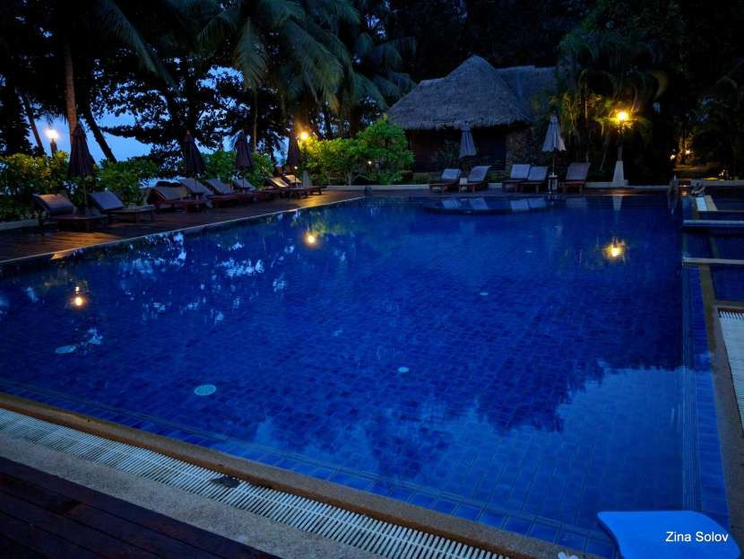
כשהגענו הרגשנו שנכנסנו ליער טרופי, מים זורמים בכל מקום, צמחייה ירוקה עבותה, קרקור צפרדעים וצרצרים- פשוט מדהים. למזלנו גם בדיוק נפסק הגשם. אז אחרי קבלת פנים חמה (אפילו החזירו לנו את ה-100 בהט הפרש על המונית- שנתנו אותם כטיפ לצוות), לקחו אותנו לחדר המהמם לא פחות עם נוף מדהים לים! בקיצור אם הייתם בבראשית בארץ שהוא כולו קונספט מדברי- המלון הזה ממש דומה לו רק בקונספט יער טרופי.
הגענו בדיוק בשקיעה ומיד הלכנו לחוף לראות את השקיעה הטרופית הראשונה שלנו, ואיזו שקיעה זו היתה!!!
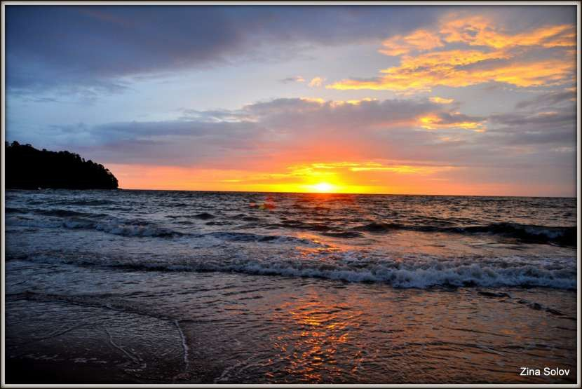
שוטטנו קצת על החוף הלבן עד שהחשיך וחזינו בכל מיני סרטנים ושאר חיות ים שיצאו לחוף לצוד פירות או גופות של חרקים מתים.
מרכז העיירה נמצא במרחק של 10 דקות הליכה אבל החלטנו להישאר ולאכול ארוחת ערב במלון- היה לנו קרייבינג לבשר אבל לצערי התאילנדים לא כאלה טובים בבשר וההמבורגר שהזמנו דמה יותר לבשר חתולים... לא נורא יש אלכוהול בשפע להקהות את הטעם.
5.10.16 יום 7: טיול בג'ונגל ומונסונים:
קמנו לבוקר מעונן וחמים, אחרי שכל הלילה ירד גשם. אחרי ארוחת בוקר במסעדת המלון על חוף הים, יצאנו לטיול הראשון שלנו באיזור- הפארק הלאומי של קאו לק. הפארק נמצא 20 דקות הליכה מהמלון בשביל יפה שעובר לאורך הים (בין הכביש לים).
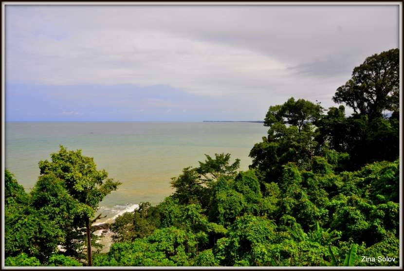
הפארק הלאומי מקיף גבעה עבותה וכולל מינים רבים של צמחיה טרופית, אבל הדובדבן שבקצפת זה ה-small sandy beach חוף קטן ומהמם. לחוף ניתן להגיע ב-2 כניסות- הצפונית שלוקחת אתכם דרך הפארק עצמו (1.5 ק"מ הליכה בשבילי הג'ונגל) או הדרומית- 10 דקות הליכה קלילה עד החוף. נחשו איפה אנחנו הלכנו? ברור שבצפונית! זו גם הכניסה הראשית. כרטיס לשמורה עולה 200 בהט לתייר (למקומי 20...) הכניסה היא ל-24 שעות וכוללת גם כניסה למפל שנמצא 14 ק"מ צפונית משם- עליו ויתרנו. מקבלים גם מפה וקדימה לדרך.
אני לתומי חשבתי שזו תהיה הליכה נעימה בשביל מסודר- בפועל מדובר בהליכה פחות נעימה כשאתם משמשים מזון למיני יתושים וחרקים (הסרחנו משמן ציטרונלה אך ללא הועיל) וצריכים לטפס ולהיאחז בעצים ובסרחים ובבוץ, מידי פעם יש עצירות נוף יפות עם תצפית על החוף. בדיעבד אני נהנתי, בעלי די קיטר כרגיל כל הדרך :). אחרי כשעה וחצי של הליכה (תביאו הרבה מים) הגענו סוף סוף לחוף- והוא אכן היה שווה את כל ההליכה! בגלל שבאנו מוקדם היה לנו את החוף לעצמנו וכבר התכוננו לטבול רגליים (היה גלי מכדי לשחות) כאשר תיירים אוסטרליים עצרו בעדנו. ולמה? מסתבר שהיו דיווחים בפוקט על box jellyfish זן קטלני של מדוזות שנראה ליד החופים- מי אנחנו שנתווכח עם אוסטרלים שמנוסים בכל מיני יצורים ארסיים... במקום התיישבנו על החוף וקשקשנו קצת עם האוסטרלים- אין להם מושג ירוק על ישראל והמזרח התיכון למעט "יש שם מלחמה לא?".
ה-small sandy beach:
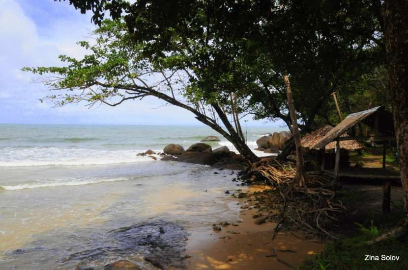
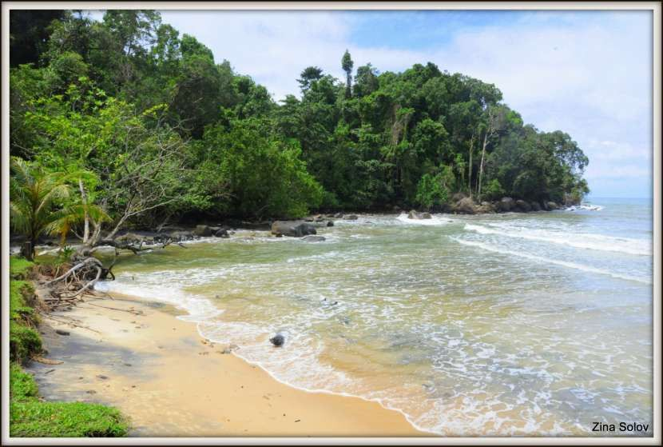
כאשר ראינו את העננים המתקבצים באופק החלטנו שזה הזמן לחזור וליהנות מפינוקי המלון. בעלי כבר די התעצל לצעוד חזרה ולכן לקחנו מונית במחיר שערורייתי של 100 בהט- לא היה לנו כוח להתווכח. הגענו למלון אחרי 5 דקות נסיעה ומיד הלכנו להתרענן בבריכה.
החוף לפני המונסון:
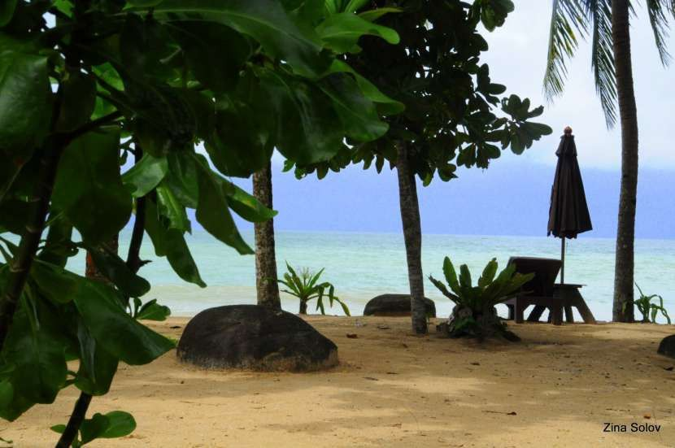
לצערנו ההנאה לא נמשכה זמן רק כי ענן המונסון סוף סוף השיג אותנו ותוך שניות התחיל לרדת גשם זלעפות, פרשנו לחדר וישבנו על המרפסת וצפינו במבול.
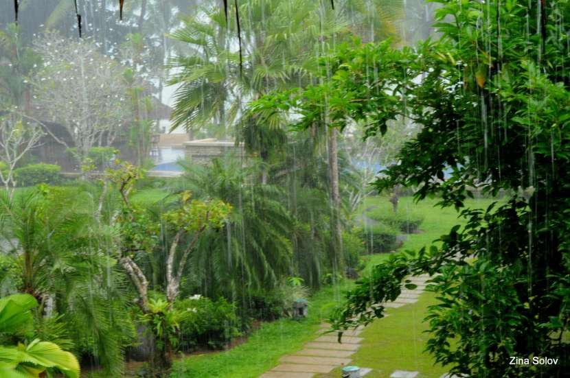
כשסוף סוף המבול החל להירגע, יצאנו לטייל על החוף (הרי מחר בבוקר אנחנו כבר עוזבים- צריך לנצל כל דקה יבשה). הצטיידנו בזוג מטריות מהמלון ויצאנו לטיול. קו החוף פשוט מהמם במיוחד עם השמיים המאיימים באופק- אפוקליפטי משהו. מצאנו נדנדה יפה (כמו בפרסומות) והתנדנדנו בכיף נהנים מהנוף. התענוג לא ארך זמן רב עד שעוד גל של מונסון הגיע והבריח אותנו לאכול צהריים במסעדת המלון.
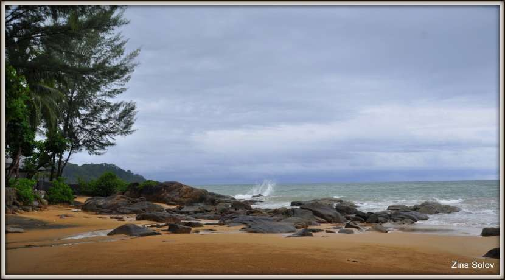
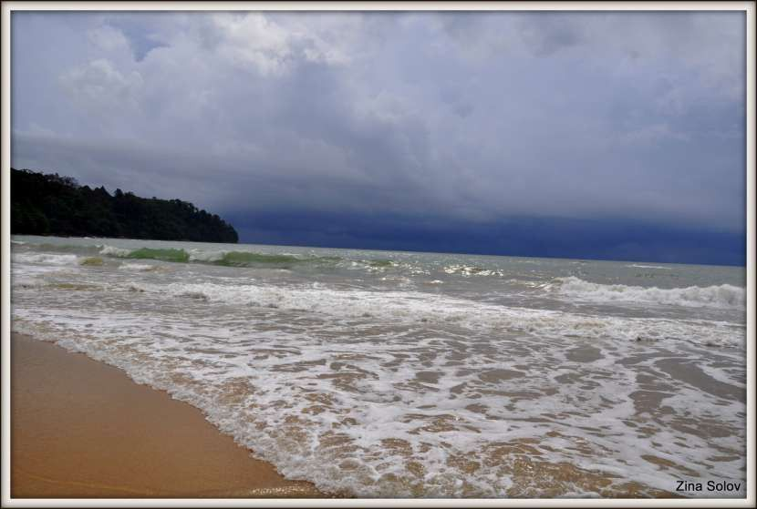
כל היום המשיך לרדת גשם כך שלא זכינו ליהנות לא מהבריכה ולא מהשקיעה. לא נורא. במקום זה החלטנו לצעוד עד לעיירה בתקווה למצוא משהו הגון לאכול ולקנות. הליכה קצרה של 15 דקות (ללא גשם לשם שינוי) הביאה אותנו לעיירה קאו לק. כמו בכל עיירה תיירותית היה שפע של חניות שמכרו את אותו הדבר בדיוק ומסעדות עם אותם התפריטים. בחרנו באחת מהם שלצערי לא הייתה כזו מוצלחת ואיך שנכנסנו התחיל עוד גל של מונסון. חזרנו למלון במונית (הגשם פשוט לא הפסיק לרדת) ואחרי שתיאמנו מונית למחר לנמל פוקט פרשנו לבר ליהנות קצת מקוקטילים תאילנדיים- הברמן היה ממש חמוד והשקיע בלעשות לי קוקוס עם פרצוף :).
ענן מונסון:
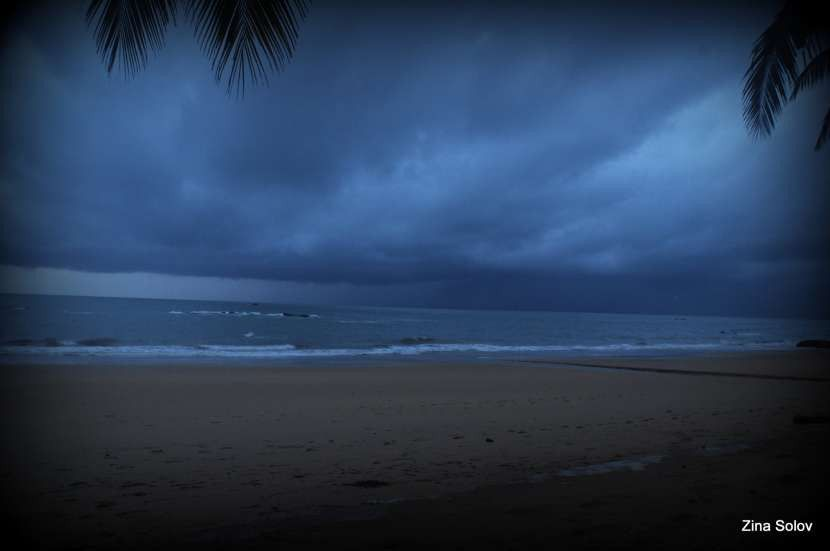
הטיול שלנו לתאילנד- אוקטובר 2016- חלק ב'
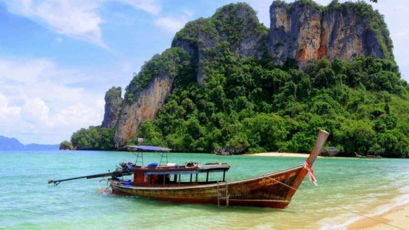
הטיול שלנו לתאילנד- אוקטובר 2016- חלק ב'
למעבר לחלק הראשון לחצו כאן.
6.10.16 יום 8 קופיפי:
קמנו לבוקר שטוף מונסונים... אחרי ארוחת בוקר על חוף משגע (ומקורה) עשינו צ'ק אאוט מגן העדן הרטוב הזה ונכנסנו למונית שתיקח אותנו לנמל של פוקט. מדובר בנסיעה של כשעה וחצי במהלכה חוצים את כל האי פוקט (די פקוק). אנחנו בדרכנו לקופיפי אשר ניתן להגיע אליו רק דרך הים (כל מלון מציע גם שירות הסעה ב-speed boat אבל אנחנו החלטנו ללכת על האופציה העממית- המעבורת).
אם אתם מגיעים למרכז קופיפי לנמל טונסאי יש לכם שפע אופציות של מעבורות, אנחנו לעומת זאת נוסעים לחוף leam tong ולמלון הולידי אין- לשם יש מעבורת מפוקט רק פעמיים ביום: 8 בבוקר ואחת וחצי בצהריים (תמיד אפשר לקחת taxi boat מטונסאי ללים טונג אבל זה יקר- על כך בהמשך). המונית הורידה אותנו בנמל רסדה של פוקט, שם נרשמנו למעבורת (קנינו כרטיסים באינטרנט כמה ימים לפני, בעלות של 470 בהט לאדם), קיבלנו מדבקה עם שם המלון. בשעה שלוש עגנו בטונסאי בקופיפי ומרבית הנוסעים ירדו. אנחנו המשכנו להקיף את האי לכיוון החוף הצפוני, מיד כשהמעבורת יצאה מטונסאי ניגש אלינו איש של המלון כדי שנראה לו את המזוודה שלנן.
קופיפי מהמעבורת:
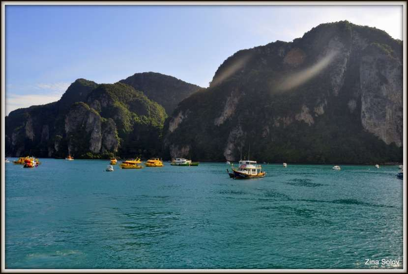
בחוף לים טונג אין נמל ולכן המעבורת עוגנת בים, אל החוף מגיעים בסירות, ככה שכל התהליך של הירידה לחוף לוקח קצת זמן. נכנסנו לסירה ונדהמנו מהמים הצלולים בצבע טורקיז מהמם. אחרי 5 דקות כבר עגנו בחוף ושם זכינו לקבלת פנים, משקה קר וצ'ק אין. המזוודות אגב מגיעות במרוכז בסירה נפרדת ועד שכבר סיימנו את הצ'ק אין היא המתינה לנו בביתן.
חוף לים טונג:
חוף לים טונג הוא שקט ומקסים, חול לבן ומים טורקיז, עם תצפית על mosquito island ו-bamboo island, הזמנתי לנו חדר סטודיו עם נוף לים כי אנחנו הולכים להתפנק כאן במשך 5 ימים שלמים. בחדר חיכתה לנו קערת פירות לא מזוהים- כמה אדומים קטנים ושעירים- זה בעצם הרמבוטן (טעים מאוד) ולידו עוד פירות שנראים כמו תפוחי אדמה קטנים (לא זוכרת את שמם אבל הם מעולים!).
השמש עוד מעט שוקעת ולכן אנחנו מיד רצים לטבילה במים הצלולים והנהדרים האלה, אין גם זכר לגשם!
7.10-10.10 ימים 9-12: קצת בטן גב והרפתקאות:
את 5 הימים הבאים העברנו בקופיפי, ביום הראשון לשהותנו בעלי לא היה מוכן לצאת מתחומי המלון ולכן הבילוי שלנו הסתכם בקייקים, שנורקל ורביצה בבריכה ובים. את הארוחות אכלנו במלון או ב-3 המסעדות הקטנות שנמצאות מחוץ למלון (המחירים שלהם די דומים ומשמעותית יותר יקרים מאשר בצ'יאנג מאי). בערב במלון פועלת מסעדת דגים טובה בה מכינים על האש את מה שאתם בוחרים.
קצת תמונות:
המלון עצמו כולל את כל מה שאתם תצטרכו- אוכל טעים, חנות, בארים, 2 בריכות, סוכנות טיולים וחוף ים משגע! רק מה כספומט אין שם. וכך מצאנו את עצמנו ללא מזומנים, תוהים איך להגיע לטונסאי כדי למשוך כסף. אז למי מכם שרוצה להגיע לטונסאי (מרכז החיים באי קופיפי) יש בעצם 3 דרכים להגיע לשם: 1. שעתיים הליכה דרך הג'ונגל (לא מומלץ כי זה שביל קופים צר) 2. לקחת taxi boat בעלות של 1200 בהט לכיוון 3. להשתמש במעבורת. רק מה, יש מעבורת פעמיים ביום בלבד ולכן צריך לתזמן זאת היטב. המעבורת יוצאת בשבע בבוקר ובאחת בצהריים (200 בהט לאדם לכיוון). מטונסאי ניתן לתפוס את המעבורת של פוקט (של אחת וחצי) שיוצאת משם בשלוש וחצי אחר הצהריים.
אנחנו בחרנו במעבורת. עלינו בשעה אחת וכעבור חצי שעה היינו בטונסאי. התחושה כשיורדים בטונסאי היא כאילו ואתם באיזשהו מבוך, מדובר בעצם על רצועת חוף צרה ובה מרוכזים כל המלונות המסעדות והחנויות, איך שאתם יורדים מהמעבורת אתם נסחפים בין המוני בני אדם ברחובות צרים וצבעוניים.
עשינו סיבוב קצר בשוק ועצרנו לצהריים, משם החלטתי לנצל את ההזדמנות וסחבתי את בעלי לנקודת התצפית המפורסמת. כדי להגיע לנקודת התצפית הולכים בעצם בנתיב המילוט מצונאמי ומגיעים למדרגות, אחרי עליה לא קשה מגיעים לתצפית הראשונה (משלמים בכניסה 30 בהט לאדם וזה בעצם כולל את 2 התצפיות). אל תוותרו על התצפית השנייה שנמצאת עוד 5 דקות הליכה משם כי ממנה נשקף נוף מדהים של כל קופיפי וגם של קופיפי ליי (האי הלא מיושב שמהווה בעצם שמורת טבע).
למי שרוצה יכול להמשיך גם לנקודת התצפית השלישית ובעצם בשביל הזה ניתן גם להגיע לחלק הצפוני של האי, אולם כמו שאמרתי מדובר בשביל קופים צר ובעלי כבר מיצה את חוש ההרפתקנות שלו בג'ונגל, ככה שאחרי שנהננו מהנוף ירדנו חזרה לעיירה. היינו אופטימיים שנצליח לתפוס את המעבורת של שלוש וחצי ולחזור ללים טונג, אולם איך שהגענו לנמל בדיוק ראינו את המעבורת מפליגה, כך שאין ברירה צריך לחפש מונית- כמובן שזו לא ממש בעיה בקופיפי, וככה מצאנו את עצמנו ב-taxi boat בעלות של 1000 בהט, ותוך חצי שעה היינו במלון.
הנמל בתונסאי:
למחרת לקחנו דרך המלון את הטיול של 4 האיים (1500 בהט ב-speed boat וכן אגרה של 400 בהט לאדם עבור הכניסה למאיה ביי). לכל אלה מכם שיש ספק לגבי מחלת ים, תעשו טובה ותיקחו כדור לפני השייט כי חבל שזה יהרוס לכם את הטיול. אני לקחתי כדור, ואמנם סבלתי מתופעות לוואי של ישנוניות קשה, זה היה עדיף על להקיא כל הדרך (היו איתנו כמה שממש סבלו מבחילה וזה פשוט הרס להם את הטיול). הטיול עצמו יחסית קצר מ-תשע ועד 12 וחצי, אבל זה די ממצה.
יצאנו לדרך בתשע בבוקר, קיבלנו מהמלון מגבות, מסיכות שנורקל וסנפירים (למי שרוצה). העצירה הראשונה שלנו היתה בחוף מאיה באיי המפורסם, חששנו מאוד שלא נוכל להיכנס לשם כי בגלל מזג האוויר בחודש אוקטובר הים מאוד סוער ויש רוחות שמקשות מאוד על הגישה לחוף, למזלנו הגענו לשם בשעה מוקדמת לפני שהמוני תיירים עטים על המקום. אין ספק שהחוף יפה אך לדעתי אולי קצת מגזימים בתיאור בסך הכל זה כמו הרבה חופים אחרים בתאילנד...
משם המשכנו לעצירה בשונית ולשנירקול- חוויה מדהימה! פשוט לא רצינו לצאת מהמים. המוני דגים יפיפיים ומים פשוט צלולים- לא לוותר על זה! לחוששים מביניכם אפשר לקחת חליפת הצלה.
העצירה הבאה היתה לגונת האמרלד לשם כבר הגענו עם המוני תיירים אחרים ומרוב ריח השמן של הסירות פשוט לא רצינו אפילו לנסות ולהכנס למים. בעלי שחה קצת, בכל זאת מדובר בלגונה עמוקה עם מי טורקיז מוקפת הרים- הנוף משגע, אבל הרעש, השמן והפיח והמוני התיירים שגודשים את המקום פשוט הורסים את הקסם של הטבע.
התחנה האחרונה שלנו היתה אי הקופים- יותר נכון תצפית על האי מהחוף (כי לא ירדנו) ומשם חזרנו למלון. זו היתה דרך נעימה להעביר את הזמן בפעילות שונה מרביצה.
בערב ישבנו לנו על החוף ונהיננו מקוקטייל אננס כשפתאום, מישהו קרא בשם בעלי ולהפתעתנו גילינו שאחד המכרים שהיה עם בעלי בצבא נמצא באותו מלון, בירח דבש, איזה עולם קטן! לכן בערב החלטנו לצאת יחד למסעדה בשרית נחמדה על החוף ליד המלון- כי נמאס לנו כבר מאוכל תאילנדי. כשטיילנו לאורך החוף שמנו לב לזוהר ירוק באופק- המוני פנסים ירוקים. מיד פתחנו במשחק חידות: אחת האפציות אפילו היתה מנחת לחייזרים (על המים), עד שבסוף ד"ר גוגל סיפק לנו את התשובה שבעצם מדובר בדייג של דיונונים שנמשכים לאור ירוק ולכן המוני סירות דיג מדליקות פנסים ירוקים כדי למשוך אותם.
בערב האחרון שלנו באי יצאנו לתור את האיזור. קראתי שניתן להגיע ברגל לחוף באגאו (או בקאו, איך שלא הוגים את זה)- החוף הסמוך, וכן שיש שם תצפית, וככה יצאנו יחד עם הזוג השני לטיול קצר. מהמלון בהולידי אין יש שביל סלול המוביל לחופים loh bagao bay, ו-lana bay. לאחר הליכה קלילה של כעשר דקות הגענו לגשר. המשכנו ללכת לכיוון חוף לאנה (לא חצינו את הגשר) ואחרי כ-5 דקות הליכה (בשביל עם תרנגולות) הגענו ללאנה ביץ' וכאן נכונה לנו אכזבה קשה. תכננו להגיע ללאנה כי משם ניתן לראות את השקיעה אולם מה שראינו זה חוף מהמם שהמקומיים הפכו אותו למזבלה. אין אפילו פיסת חול לבן נקיה שאפשר לשבת.
למי שרוצה, מחוף לאנה ניתן להגיע דרך הג'ונגל, ל-nuli bay (הליכה של כ-30 דקות). ואם אתם ממש במצב רוח להליכה אז שעתיים נוספות יביאו אתכם לעיירה טונסאי (שוב דרך שביל בג'ונגל) דרך נקודות התצפית של קופיפי. מאוכזבים, החלטנו לחפש את התצפית שקראתי שנמצאת ליד הגשר ואכן מצאנו שלט קטן שמורה על תצפית- עלייה תלולה דרך בוץ במעלה ההר, החלטנו לוותר ולראות מה יש לחוף באגאו להציע.
כאן נכונה לנו דווקא הפתעה נעימה, מיד כשחצינו את הגשר נכנסנו לעיירה קטנה מלאה פאבים חמודים ומסעדות ומסאג'ים במחירים מצחיקים (בהשוואה למחירי המלון). אנחנו המשכנו לחוף, שאמנם פחות יפה מלים טונג אך מרשים גם כן, עם המון עצי דקל ענקיים מלאי קוקוסים (התפללנו שרק לא ייפול על הראש איזה קוקוס). לאחר שיטוט בחוף נכנסנו לאחד הפאבים וזה היה אחד הערבים הכפיים שלנו בטיול! בפאב ציירנו עם טושים זוהרים על הקירות מעץ, נהנינו מבירה ואווירה טובה וראינו קצת את השקיעה המקסימה! ראינו גם ילדים מקומיים בני 8 נוסעים על אופנוע... אין בעיה להגיע לבאגאו ולפאבים גם בחושך- הדרך סלולה רק קחו איתכם פנס.
כך בעצם עברה שהותנו בת 5 הימים בקופיפי חוויה מדהימה!
11.10-13.10 ימים 13-15 ריילי- לא כמו שחשבנו:
אחרי בוקר נינוח של בטן גב בבריכה, עשינו צ'ק אאוט, ובאחת בצהריים עלינו על המעבורת שתיקח אותנו לטונסאי ומשם למעבורת לריילי. גם הפעם הזמנו כרטיסים מראש באינטרנט (450 בהט לאדם). הגענו לטונסאי בשעה 14:00 כך שהיה לנו כמעט שעתיים עד המעבורת הבאה, ניצלנו את הזמן לשוטטות בחנויות וארוחת צהריים. המעבורת יצאה ברבע לארבע ובשעה חמש עגנו בצד המזרחי של ריילי (על מזח מאולתר)- גם בריילי אין נמל ולכן יורדים בסירות עד המזח. משם המעבורת ממשיכה לחוף אונאנג הסמוך.
ריילי זו רצועת חוף מוקפת צוקים שהגישה אליה אפשרית רק דרך הים. יש בעצם שני צדדים שביניהם מקשרת רצועת אדמה צרה (עליה נמצאות רוב החנויות והמסעדות, או כך לפחות חשבנו), צד מזרחי- שאינו ראוי לרחצה בגלל המוני המנגרובים שצומחים שם, וצד מערבי שזה בעצם החוף. רוב המלונות נמצאים בצד המזרחי, אנחנו הזמנו לילה במלון railay princess resort and spa, זה היה המלון היחיד בצד המערבי של האי במחירים יחסית שפויים.
ריילי- מהמעבורת:
צד מזרחי:
צד מערבי:
ממש בירידה מהמזח יש שילוט מלונות וכיוונים, אנחנו פנינו שמאלה ואחרי 3 דקות הליכה ברצועת בטון צרה שמהווה את נתיב ההליכה העיקרי, הגענו לצד האחורי של המלון.
המלון הזה משרתע מהצד המזרחי ועד הצד המערבי של האי. לצערי זה המלון היחיד שהיה פשוט מזעזע בטיול שלנו. המלון די ישן ולא הכי מתוחזק, יש תחושה שמנסים לגלגל הכל על האורח. כשעשינו צ'ק אין, היתה תיירת שנשבר לה הארון בחדר והמלון רצה לחייב אותה. אנחנו קיבלנו חדר בקומה התחתונה שהכניסה לחדר זה גם ה"חלון" היחיד בחדר, ולא ניתן להשאיר את הדלת פתוחה כי כולם פשוט עוברים לידכם. בחדר היה מזגן ללא תריסים, היה קפוא בחדר, ואין חלונות בכלל (כמו שאמרתי הכניסה לחדר זה דרך הדלת השקופה שלא ניתן להשאירה פתוחה בלילה כי כולם עוברים שם). כשביקשתי שמיכה נוספת אמרו שזה בתשלום של 500 בהט! וגם היה עובש באמבטיה. אחרי לילה של סבל בו היינו מוכנים לוותר על הכסף ולעבור למלון אחר, העבירו אותנו לחדר בקומה מעל. שם לפחות היה לנו נוף ואוויר כי הכניסה לחדר היתה דרך דלת נורמאלית, והיתה גם מרפסת ולא פינת ישיבה בדיוק איפה שכולם עוברים, והאמבטיה היתה במצב יותר טוב...
אז כמו שאמרתי אחרי הלילה הראשון הקשה שעבר עלינו החלטנו לתור את המקום ולהגיע לחוף פרננג שקראתי שהוא מהמם ביופיו. מדובר בהליכה של 10 דקת מהמלון לחוף- מגיעים לצד המזרחי וכשאתם עם הפנים לים פונים ימינה לכיוון הצוק ופשוט הולכים בשביל. ממש מתחת לצוק יש עליה לתצפית אבל כשראינו את העלייה התלולה (בעזרת חבלים) ואת כמות הבוץ, החלטנו לוותר. הגענו לפרננג בסביבות 10 בבוקר ולא היה מקום לזוז, החוף פשוט שרץ תיירים, לכן עשינו אחורה פנה והעברנו את היום בבטן גב במלון (עברנו בין 2 הבריכות). לקראת השקיעה התמקמנו לנו לתצפית יפה ואכן זכינו לאחת השקיעות היפיפיות שראינו עד כה בתאילנד.
בערב החלטנו לתור מעט את האי, כבר הבנו שבצד המזרחי אין מה לעשות, אז שוטטנו על החוף המערבי עד שהגענו לסמטה מלאה במסעדות וחנויות, המשכנו עם הסמטה לכיוון פנים האי (מיד אחרי החנות האחרונה בסמטה, תמשיכו ללכת פנימה דרך שטח נטוש כזה ואחרי כ-5 דקות הליכה תגיעו ליעד) ולהפתעתנו גילינו פה גן עדן של מקומיים- המוני מסעדות, 2 מסאג'ים ופאבים מקסימים! סיימנו את היום במסאג' (ששחרר לי את הצוואר התפוס מהלילה בגלל השינה עם מזגן ללא תריסים) וארוחה טובה.
למחרת, הזמנו טיול לאי הונג דרך המלון ב-speedboat בעלות של 1500 בהט לאדם (ואגרה של 200 בהט לאדם עבור הכניסה לאי הונג). הטיול כולל 4 עצירות: בלגונה, האי Koh Lahding, Koh Pakbia והאי הונג כמובן. מכל הטיולים שלקחנו זה היה הטיול הכי טוב!
יצאנו לדרך בתשע בבוקר, העצירה הראשונה היתה בלגונה בגלל הגאות (צריך להיות בגאות כי בשפל פשוט לא ניתן להיכנס ללגונה) והסירה שטה בתוך הלגונה ואתם יכולים ליהנות מהנוף היפה. הלגונה עצמה נראית כמו חדר ומכאן בעצם שם האי- הונג זה חדר בתאילנדית.
משם ממשיכים לאי Lahding לעצירה לקפה. אפשר לטייל קצת לחוף מצד השני (הליכה ארוכה מאוד של 2 דקות דרך ג'ונגל) או לשנרקל במפרץ המהמם.
משם ממשיכים ל Pakbia- אי מדהים! ממש תחושה של גן עדן, ולסיום- הדובדבן שבקצפת- האי הונג. האי עצמו אינו מיושב ומהווה שמורת טבע. אכלנו צהריים והתפזרנו לרביצה על החוף ושנירקול. האתר פשוט מדהים, על החוף איגואנות זוחלות, ובמים יש שונית ממש רדודה (להיזהר כששוחים כי בקלות ניתן לדרוך על שונית) וכמה דגים! אפילו זכינו לראות דג כמו נימו שוחה חופשי ומאושר בשונית... זו היתה חווית השנירקול הכי מדהימה שהיתה לנו בתאילנד! אחרי שמיצינו את השחייה קנינו לנו 2 קוקוסים בקיוסק וישבנו על חול טרופי לבן בצל המנגרובים, בוהים במים הכחולים השקופים ושותים קוקוס- זה נקרא גן עדן!
חזרנו למלון בשעה אחת, ואחרי שנ"צ קצר שוב הלכנו לחוף ליהנות מהשקיעה המהממת של ריילי, את הערב העברנו בפאב נחמד, רק מה, היום המוזיקה היתה חלשה, ואז גילינו, בעזרתו של האינטרנט, שמלך תאילנד נפטר כמה שעות קודם, ובעצם המדינה נכנסת לאבל. חששנו שכל המקומות יסגרו אולם הכל היה פתוח, אלכוהול הוגש רק המוזיקה הושמעה בווליום נמוך.
14.10 יום 16- בי ביי ריילי, שלום אונאנג:
ביום האחרון שלנו בריילי קמנו מוקדם (שבע בבוקר) ולפני ארוחת הבוקר הלכנו לחוף פרננג. איזה הבדל! אין אף אחד על החוף בשעה כה מוקדמת, פרשנו לנו מחצלת על החוף ונהנינו מהשקט והשלווה. ליד החוף יש מערה מלאה בפסלונים פאליים שמשמשת כאתר לבקשות פריון מהאלים, יש שם פסלונים בכל מיני צורות גדלים וצבעים ממש כמו מייצג בחנות אירוטית.
קרקורי הרעב הניסו אותנו לחדר האוכל ולארוחת בוקר. אולם בדרך לחדר האוכל, פתאום הבחנו בתנועה מעלינו, וראינו חבורת קופים מקפצת לה בין העצים והביתנים של המלון- הנה כמה שחייכו למצלמה:
מיד לאחר ארוחת הבוקר החלטנו לעזוב, לא אהבנו את ריילי. לדעתי החופים בקופיפי הרבה יותר יפים מאשר בריילי. גם חוף פרננג המהולל לא עשה עלינו רושם כלל ולכן החלטנו לעבור ליעד הבא- החוף הסמוך או-נאנג. בדיעבד הייתי בכלל מוותרת על שהיה בריילי, הטיולים יוצאים גם ככה מאונאנג, המלונות שם זולים יותר ויש מבחר רב יותר של מסעדות וחיי לילה. ההגעה והעזיבה מריילי לא מסובכת כלל- פשוט הלכנו לחוף וחיכינו עד שתתמלא סירה (עבור 10 אנשים המחיר זה 100 בהט לאדם) אנחנו היינו 8 אז פשוט שילמנו קצת יותר. אחרי שיט של 10 דקות כבר היינו באונאנג.
ביי ביי רילי:
הזמנו את המלון krabi resort והמלון לא אכזב! שודרגנו לוילות שליד הבריכה, מדובר במתחם חדש לגמרי והבריכה פושט מהממת- בנויה כספינה והביתנים סביב הם כמו גלים, פשוט עיצוב יפיפה. גם החדרים מעוצבים כמו חדרים באונייה עם חלונות עגולים ומנורות לילה בצורת עוגן. למלון יש גם גישה לחוף ולטיילת. את היום הראשון בילינו ברביצה בבריכה, שיטוט בעיירה, וצפייה בשקיעה מהממת!
בערב החלטנו לנסות סוף סוף את התאי מסאג', נשכבנו על המיטות בפיג'מות שקיבלנו, ובעוד אני זוכה למסאג' נעים ונהנת מכל רגע, אני קולטת את המסאג'יסטית מטיילת על גבו של בעלי (קשה היה לדעת אם הוא סובל בשקט או נהנה)- המסקנה שהוא הגיע בסוף זה שמסטג' תאילנדי זה לא בשבילו כי “פירקו לו את הגב”.
15.10-16.10 ימים 17 ו-18 ג'יימס בונד ובטן גב:
למחרת החלטנו לקחת טיול לאי של ג'יימס בונד ומפרץ פן נאגה. עלות הטיול 1800 בהט לאדם (כולל קייקים- מה שבדיעבד התברר כמיותר בעליל), בסך הכל מדובר בטיול די ארוך כי לוקח שעתיים להגיע למפרץ פן נאגה מקראבי. עם מזלי הרב, הנהג היה כלכך גרוע עד שכל חווית הנסיעה היתה סיוט מתמשך! כל הדרך הרכב הטלטל עד כדי בחילה נוראית, עד כדי כך שאפילו בעלי החסון קיבל בחילה בשלב מסוים ואני רק התפללתי שלא להקיא בדרך.
אספו אותנו מהמלון בתשע בבוקר, ואחרי נסיעה של כשעה (אחרי שאספו את כל המשתתפים כמובן) הגענו לעצירה הראשונה- מפל, די עלוב לטעמי.
משם המשכנו לפוקט ולמקדש הקופים. חוץ מכמה קופים אין באמת מה לראות שם, מי שרוצה יכול להיכנס פנימה ולראות את המקדש- אותנו זה לא עניין והסתפקנו בצפייה בקופים המרוקנים את פחי האשפה.
אחרי המקדש סוף סוף הגענו לנמל ועלינו על סירה שתיקח אותו לאי של ג'ימס בונד (האי נקרא על שם הסרט שצולם שם). השייט עובר במפרץ פן נאגה היפה והמלא איים קטנים שצפים מהמים, אולם רעש המנוע כלכך נורא שהייתי ממליצה לכם לקחת אטמי אוזניים. אחרי כחצי שעה של שייט בין האיים הגענו.
האי של ג'יימס בונד יפה, אך מתוייר בטירוף, אין כמעט מקום לדרוך שם מרוב תיירים, ואנחנו עוד היינו שלא בעונה! אחרי ששוטטנו כשעה באי (באמת אין מה לעשות שם שעה בין המוני התיירים הגודשים את המקום), משם המשכנו לקייקים.
סוף סוף חשבנו שנזכה להנאה בטיול, לשוט בקצב שלנו במפרץ וליהנות מהטבע, רק מה, לא אנחנו אלה שחותרים! כך מצאנו את עצמנו יושבים כלואים בקייק ומישהו חותר יחד עם המוני קייקים כאלה, וכולם נעים באותו הכיוון, איזה טבע, איזה שלווה ואיזה נעליים- יותר כמו מסלול מכוניות מתנגשות רק עם קייקים! ממש כמו בריכת צפרדעים! כבר הבנו שהטיול הזה לא בשבילנו אבל אין מה לעשות ננסה להפיק את המיטב. בחזרה בסירה לכיוון הנמל, עברנו ליד העיירה הצפה, עיירה שכולה על המים פרט למסגד המרשים שהוא המבנה היחיד שעל פיסת האדמה הצרה (דווקא מקום שבכיף היינו שמחים לעצור ולשוטט, אך לא עוצרים שם וחבל).
כשהגענו לחוף, המשכנו לגן הבוטאני בפוקט לעצירה לצהריים (אורז ועוף) ומשם הובטח לנו להגיע לשוק פירות. טוב לפחות נקנה מעט פירות איתנו, חשבנו, אך נכונה לנו עוד אכזבה.
שוק הפירות כלל בעצם 2 מדפים של אננס ודוריאן (הפרי המסריח) וגלידה תוצרת עצמית, ממש שוק עם מבחר מטורף! לפחות קנינו גלידה... מאוכזבים קשות מהטיול נערכנו לעוד נסיעה מבחילה של שעתיים עד המלון. מה שבטוח, זה היה הטיול האחרון המאורגן שלנו אי פעם בתאילנד! בדיעבד עדיף לקחת טיול כזה מפוקט (פחות זמן).
את היום האחרון באו-נאנג בילינו בבטן גב וקפיצות בבריכה העמוקה (הבריכה השנייה במלון). ממש ליד המלון מצאנו מסעדה חביבה ונהנינו מארוחות ערב מעולות על גג הבניין של המסעדה (לצערי הרב אני לא זוכרת את שם המסעדה). הזמנו דרך המלון הסעה לשדה בקראבי בעלות של 800 בהט למחר (אשפר למצוא גם ב-600 אבל כבר נמאס לנו מכל סצנת המיקוח בתאילנד ככה שהחלטנו ללכת על בטוח דרך המלון).
17.10 יום 19 בנגקוק העיר הגדולה:
מיד אחרי ארוחת הבוקר אספו אותנו לשדה התעופה קראבי שנמצא כחצי שעה נסיעה מהמלון. עוד טיסה של bangkok airways יצאה בדיוק מרבי וכבר בשעה 13:00 נחתנו בשדה של בנגקוק. בשדה, ישר קידמה אותנו אווירת האבל הכללית של הממלכה - סרטים שחורים ולבנים והמון תמונות של המלך.
לאחר קבלת המזוודה הלכנו לקומה 1 (קומת המוניות) הוצאנו מספר שהפנה אותנו לעמדת המונית. כאן יש לכם הזדמנות להתמקח על המחיר או לבקש מונה (meter), מהרבה טיפים הבנתי שמונה תמיד יהיה זול יותר ולכן ביקשנו מונה, מה גם שהמלון שלנו נמצא באיזור הקאוסן כך שמונית צריכה לעלות כ-400 בהט (הנהג ביקש 500 לפי מונה יצא 400)...
המונית עצרה ברחוב הומה והנהג אמר לנו שהמלון נמצא מצד שמאל בסימטה, הלכנו לכיוון שהראה לנו אך לא מלון ולא נעליים, רק רחובות מלאי בוץ... הפעלנו את עזרתו של גוגל והוא הראה שאנחנו צריכים לחזור לכביש הראשי. מסתבר שהמלון היה פשוט בצד השני של הכביש וכל שעלינו לעשות זה לחצות- משימה די קשה בתנועה הסואנת וללא מעבר חצייה או רמזור בסביבה. בסוף איכשהו נצמדנו לתאילנדים אמיצים וחצינו את הכביש.
המלון הזה הוא פשוט- tara place, מיועד בעיקר להעביר את הלילה (המזרן היה יותר קשה מקרש) אבל זה התאים לדרישותינו. האמת שלא כלכך תכננתי את בנגקוק, קראתי על הקאוסן והקניונים אז חשבתי שנהיה באיזור הקאוסן שהוא יותר מרכזי... בדיעבד עדיף היה לשהות באיזור הקניונים (יותר פעילות).
טוב, אחרי מקלחת החלטנו (או יותר נכון גררתי את בעלי) לצאת ולהכיר את העיר. למען האמת היה לי קרייבינג מטורף לסושי אז מצאתי מסעדה יפנית ממש בקאוסן רק לצערי כשהגענו אליה היא היתה סגורה, איזו אכזבה! רק מלחשוב על עוד פעם אוכל תאילנדי ואנחנו כבר מקבלים בחילה.
אני יכולה להבין את ההתלהבות מהקאוסן למי שרק נוחת בתאילנד, אבל אחרי 3 שבועות כמעט הרחוב כבר לא עושה רושם- אותם הדוכנים, אותם התאילנדים שמנסים למכור לכם חליפה או מסאג' או לשכנע אתכם להיכנס למסעדה עם האוכל הכי אותנטי (בדיוק כמו הזו שלידה). עדיין היה לי קרייבינג לסושי, או לכל דבר פרט לאוכל תאילנדי, כשפתאום קלטתי שלט של סושי! זו היתה מסעדה ישראלית של המרכז למטייל, אבל היי, כמו שאומרים קבצנים לא יכולים להיות בררנים, אז מיד עטנו על המסעדה. אחרי ארוחת סושי סבירה היינו מוכנים לקרוע את העיר.
לפי גוגל מדובר בהליכה של כ-10 דקות לארמון המלך אז החלטנו ללכת לשם. אפילו לא חשבתי שייתכן והמקום סגור... רק כשחצינו את הכביש הראשי ומצאנו עצמנו בקרב המוני תאילנדים לבושים שחור לבן וכבישים חסומים הבנו שכנראה לא נכנס לארמון המלך. מה שכן זכינו להתהלך ברחוב עם המון תאילנדים אבלים, כל התהלוכה מאורגנת טיפטופ, כשכל 5 מטר יש דוכנים עם מים מינרלים לשתייה (מחלקים בחינם לעוברים והשבים). הגענו לחומת ארמון המלך- אפשר היה להיכנס כדי לחתום בספר המלך (או משהו כזה) אבל התור היה מטורף.
משם המשכנו לכיוון המקדש wat pho המרשים. עלות כניסה 100 בהט לאדם ושם בעצם נמצא פסל בודהה השוכב. יצאתי קצת טיפשה, כי שכחתי שאסור להיכנס למקדש הפנימי עם שורט קצר ומשום מה לא היו במקום חצאיות להשכרה, כך שלאחר שיטוט במקדש עצמו לא ממש זכינו לראות את בודהה השוכב (בעלי בטוח לא הצטער על כך).
משם המשכנו לנהר כדי לראות את wat arun מקדש השחר שהיה בשיפוצים. רציתי לקחת סיבוב באוטובוס על הנהר אבל בעלי כבר מיצה את חוש ההרפתקנות שלו, והחום והלחות לא עזרו, כך שבלית ברירה נאלצתי לדכא את חוש ההרפתקנות שלי ולפנות חזרה למלון.
הליכה רגלית לא באה בחשבון- הוטל וטו. לכן חיפשנו מונית, רק מה, בגלל הכבישים הסגורים אף מונית לא הסכימה לקחת אותנו (אפילו לא תמורת 200 בהט) לכן מצאנו טוקטוק. אני לא מבינה על מה ההתלהבות- לנסוע ולנשים את כל הפיח של העיר... אבל אחרי חצי שעה הגענו למלון.
כשהחשיך והרעב הניס אותנו החוצה החלטנו לנסות שוב את מזלנו בקאוסן, ומה אני אגיד, הבדל של שמים וארץ! אם בבוקר מדובר ברחוב מזוהם ומטונף, בערב הוא הופך לשוק ססגוני מלא אורות וקסם. אחרי שוטטות מצאנו לנו פאב חמוד והתיישבנו לארוחת ערב, כלכך התלהבנו מהאווירה שכבר חשבנו שנזמין גם קינוח ובכלל נבלה כמה שעות בנעימים, כשפתאום באמצע הביס בבננה רוטי שלי, בעלי אומר "אל תסתכלי אחורה", טוב אחרי משפט כזה נראה אתכם לא מסתכלים, ומה רואות עיני? חולדה בגודל של חתול מטיילת להנאתה ממש מאחורי בין השולחנות והסועדים. כמו שאמרתי, מזל שאני לא פוחדת מחולדות, אבל על התיאבון נוכחותן משפיעה- הוא נעלם מיד. כאילו הריח את התיאבון שהסתלק לו, התיישב לידנו חתול שמן שפשוט התעלם באלגנטיות מהחולדה וקיווה מאד שיקבל משהו לאכול... בשלב זה הזמנו את החשבון וברחנו משם. למזלנו ממש מתחת למלון יש מסאג'- אין כמו מסאג' טוב לסיום היום...
18.10 יום 20: שופינג
היום הוקדש לשופניג וסיבוב קניונים. צריך לקנות מתנות לא? אז לקחנו מונית לקניון MBK (הרי מספרים שזה גן עדן של מציאות) בפועל גן העדן היה פשוט גיהינום שלא מהעולם הזה! מונית מהקאוסן עלתה לנו 100 בהט (עם מונה, כחצי שעה נסיעה מהמלון) הגענו לקניון בשעה 10:00 כשרוב החניות עדיין סגורות. התחלנו את הסיבוב בקניון בן 7 הקומות. האמת בחיים שלי לא חשבתי שבעלי יכנס ל-shopping frenzy אבל זה ההסבר היחיד שאני יכולה למצוא ל-7 (ש-ב-ע)! שעות בקניון (הוא עוד היה ממשיך אילולא הייתי כבר על סף התמוטטות עצבים. הייתם חושבים שקנינו המון דברים, אבל לא! אין מה לקנות- כל הדברים הזולים זה פשוט זבל (בדיוק הזבל שמוכרים באיים) ומה שסביר עולה כמו בארץ. על מה בזבזנו 7 שעות? אלוהים יודע. לפחות סיקתי בשנית את קרייבינג הסושי שלי- היה טעים!
כפיצוי על יום מבוזבז (בעיני כמובן) בערב החלטנו לנסות שוב את המסעדה היפנית שהיתה סגורה אתמול (nippo ichiban). המסעדה נמצאת בקומה שנייה של בניין (אבל יש שלט קטן מהרחוב) ברחוב הקאוסן. מדובר במסעדה קטנטנה אבל כלכך ביתית ונעימה, והסושי- פשוט להיט! מעט נחמה על היום. לפני השינה קינחנו שוב בפוט מסאג'.
19.10 יום 21: יום אחרון
היום האחרון שלנו בתאילנד, אחרי הסיוט של אתמול החלטנו לבלות קצת בעיר ברוגע, לכן התחלנו את היום באקווריום הגדול- siam ocean world הנמצא בקניון סיאם פארגון בקומה התחתונה. מדובר באקווריום ענק, פתוח כל יום מ-10 עד 22. כניסה רגילה למבוגר עולה 990 בהט (ניתן להזמין עד 24 שעות לפני גם באינטרנט במחיר מעט זול יותר). כבר כשנכנסנו קיבלנו תוכניה על שעות האכלה וכו'. אני חושבת שזה האקווריום הכי מרשים שביקרנו בו אי פעם. הוא ענקי! ויש בו הכל- דגים קטנים, דגים ענקיים, כרישים, פינגווינים צבים ועוד. האגף הכי מרשים בעיני זה הכרישים- אתם הולכים במנהרה והם פשוט שוחים סביבכם-מדהים! אגב למי שמעוניין ניתן לקנות כרטיס עם פעילויות משולבות כמו צלילה עם כרישים, שייט בסירה והאכלה וכדומה.
אנחנו בילינו במקום שעתיים ומשם נשנשנו צהריים באחת מהמסעדות הרבות בקניון. אחרכך בעלי רצה לעשות סיבוב בקניון הזה (כי 7 שעות אתמול לא הספיק) אבל כשראינו את החנויות במקום- פראדה, גוצ'י וכו' הבנו שעם השופינג סיימנו.
קראתי שפארק לומפיני שנמצא ליד הקניונים הוא המקום ליהנות מהטבע ומיד שמנו פעמינו לשם, ברחובות מלאי הפיח והלחות. הגענו לפארק והוא אכן חביב, רק שמזג האוויר היה פשוט נורא מכדי ליהנות מטיול. לכן שוטטנו שם קצת- ראינו את הבניינים המשתקפים באגם המלאכותי ומשם תפסנו מונית לקאוסן להשלמת קניית מזכרות. בדרך עברנו על פני הרובע הסיני המרשים וממש הצטערתי שלא יצא לנו לשוטט שם (אבל בעלי כבר מיצה את חוש השיטוט בטיול ולא רציתי למתוח את הגבול יותר מידי :)).
פארק לומפיני ובגקוק הפקוקה:
בערב שוב התפנקנו בסושי טעים מהמסעדה היפנית ולאחר מסאג' אחרון פרשנו לישון.
למחרת לקחנו מונית לשדה וכך נגמרו להם 3 שבועות בתאילנד, עכשיו נוסעים להתקרר במוסקבה לעוד 3 ימים :).